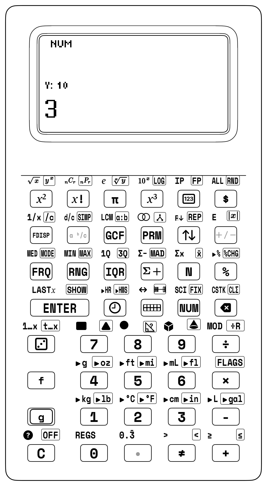

Whole Number Operations & Skip-Counting Ladders
4.1 How 7-Year-Old Carl Friedrich Gauss Outsmarted His Teacher in 30 Seconds (and Why Multiplication Is a Physical Rectangle, Not a Memorized Song)
In the winter of 1784, inside a cold, dimly lit classroom in Brunswick, Germany, an exasperated schoolmaster named J.G. Büttner slammed his heavy wooden cane onto his oak podium. His classroom of boisterous boys was unruly, and Büttner desired an hour of absolute quiet.
Walking to the blackboard, he chalked an intimidating assignment: Add every integer from 1 to 100 on your slates.
The schoolmaster settled back into his leather armchair, confident that his exhausted pupils would spend the rest of the morning bent over their slates in agonizing manual calculation.
Less than thirty seconds later, a skinny seven-year-old boy named Carl Friedrich Gauss (Gauss, 1809) stood up from his rough wooden bench. While his classmates were still desperately computing \(1+2=3, 3+3=6, 6+4=10\), young Gauss calmly strode to the master's desk, slammed his slate face-down, and proclaimed in his native Low German dialect:
Büttner glared at the boy, certain he was bluffing. But at the end of the hour, when the slates were turned over, all the other boys had scribbled pages of error-riddled arithmetic. Only young Gauss’s slate contained the exact, perfect sum: 5,050.
How did a seven-year-old outsmart an experienced schoolmaster in thirty seconds?
Gauss did not sing times tables in his head. He did not count on his fingers. He looked at the problem spatially. He noticed that the numbers could be folded in half like a piece of paper, pairing the extreme ends into identical sums: $\(1 + 100 = 101, \quad 2 + 99 = 101, \quad 3 + 98 = 101, \quad \dots \quad 50 + 51 = 101\)$
There were exactly fifty pairs of \(101\). And fifty groups of \(101\) is not fifty tedious additions; it is a geometric rectangle measuring \(50\) units wide by \(101\) units tall: $\(50 \times 101 = 5,050\)$
This is the great epiphany that conventional elementary school math so often conceals: multiplication is not an arbitrary song you recite from memory; multiplication is a physical rectangle of space. When you arrange tiles into equal rows and columns, the product is simply the physical area of the grid.
On the StackCalc SC-6, we honor Gauss's spatial insight. Using our physical 144-Tile Four-Color Array Studio, you prove the commutative, associative, and distributive properties with your hands. And on the calculator keypad, you command three genuine computational superpowers: Superpower 1 ([g] [REP]) for rhythmic skip-counting ladders, Superpower 2 ([g] [÷R]) for instant simultaneous quotient and remainder display, and Superpower 4 ([f] [LASTX]) for self-checking inverse arithmetic without scratch paper.
Chapter Baseline Mode: [NUM]
Standard Base-10 Arithmetic • 4-Stack XYZT • Clean Transflective Display
Unlocked Keycaps Ribbon — Grades 2–4 Operations Suite
• Arithmetic Operators: [+] Addition, [-] Subtraction, [×] Multiplication, [÷] Decimal Division.
• RPN Superpowers: [g] [REP] (Replicate Stack for Skip-Counting), [g] [÷R] (Quotient & Remainder), [f] [LASTX] (Self-Checking Inverse Recall).
• Stack Manipulation: [ENTER], [x⇄y] (Swap Registers X and Y), [C] (Clear X), [<-] (Backspace).
• Display Formatting: [NUM] (Whole Number Mode), [$] (Currency Mode).

4.2 Concrete Foundation: 144-Tile Four-Color Array Studio & Map Theory
When you first learn multiplication, it might seem like a song to memorize. But multiplication is really spatial equal groups, rectangular area arrays, and color-coded maps you can build with your hands.
| Learning Stage | Physical Manipulative Kit | SC-6 Representational Sandbox | Abstract Operational Stack |
|---|---|---|---|
| 1. Concrete (Enactive) | 144-Tile Four-Color Array Studio | Physical interlocking tiles and 90° array rotation | Tactile array perception |
| 2. Representational (Iconic) | 4-Color Quadrant Partitioning & Map Theory | High-contrast LCD vector dot-matrix grid | Visual area model representation |
| 3. Abstract (Symbolic) | Four-Register RPN Stack (\(T, Z, Y, X\)) | Y [ENTER] X [×] two-number drop |
Chained parenthesis-free speed |
The StackCalc physical manipulative ecosystem replaces loose single-purpose blocks with the 144-Tile Four-Color Counting & Array Studio:
144-Tile Four-Color Counting & Array Studio
The physical manipulative studio provides 144 precision interlocking stacking tiles ($20.0 \times 20.0 \times 7.0\text{ mm}$) arranged across four distinct architectural palettes:
1. Archival White (crisp matte finish)
2. Cobalt Blue (deep saturated tone)
3. Radiant Gold (warm amber tone)
4. Slate Gray (technical neutral tone)
with exactly 36 tiles per color. Each tile has a 1U visible height ($7.0\text{ mm}$), aligning with the 1/12th Fraction Studio tile so that 12 vertically stacked tiles match the $84.0\text{ mm}$ master datum of the 1-Whole Fraction Tower. Precision slip-fit chamfers allow smooth vertical stacking and planar docking without fatigue or sticking.

4.2.1 The Mathematical Harmony of \(4 \times 36 = 144\)
The number 144 divided into 4 colors creates unique mathematical properties: 1. \(12 \times 12\) Master Multiplication Matrix: The full kit builds the complete \(12 \times 12 = 144\) times table. 2. Four Complete \(6 \times 6\) Squares: Each individual color contains 36 tiles, which is itself a perfect square (\(6 \times 6 = 36\)) and a triangular number (\(1 + 2 + \dots + 8 = 36\)). 3. Four-Player Team Quads: At a 4-player math workshop table, each player receives their own signature color set of 36 tiles.
| Array Orientation | Grid Dimensions | Row Breakdown | Total Area |
|---|---|---|---|
| Array A | \(3\text{ Rows} \times 8\text{ Columns}\) | 3 rows of 8 tiles (\(8 + 8 + 8\)) | \(3 \times 8 = 24\text{ tiles}\) |
| Array B | \(4\text{ Rows} \times 6\text{ Columns}\) | 4 rows of 6 tiles (\(6 + 6 + 6 + 6\)) | \(4 \times 6 = 24\text{ tiles}\) |
4.2.2 Station Lesson 4.1: The 144-Tile Rectangular Array Studio & Multiplication Properties
Station Lesson 4.1: Tactile Setup
• Manipulatives: Counting & Array Studio with 144 Precision Interlocking Tiles (4 colors × 36 tiles)
• Hardware: StackCalc SC-6 Elementary Calculator
• Core Goals: Tactile proof of Commutative, Associative, and Distributive properties with 4-register stack traces

1. Commutative Property (\(A \times B = B \times A\))
Build a solid rectangular mat of 3 rows of 8 tiles (\(3 \times 8\)). Now, physically pick up the mat and rotate it by \(90^\circ\) on the tabletop. You now see 8 rows of 3 tiles (\(8 \times 3\)). Did the number of tiles change? Not a single tile was added or removed!
On the SC-6 stack:
- Sequence 1: 3 [ENTER] 8 [×] \(\longrightarrow X = \mathbf{24}\).
- Sequence 2: 8 [ENTER] 3 [×] \(\longrightarrow X = \mathbf{24}\).
| Keystroke | Register T | Register Z | Register Y | Register X (Display) |
|---|---|---|---|---|
| [3] [ENTER] | 0 | 0 | 3 | 3 |
| [8] [×] | 0 | 0 | 0 | 24 |
| [8] [ENTER] | 0 | 24 | 8 | 8 |
| [3] [×] | 0 | 0 | 24 | 24 |
| You see with your own eyes and feel with your own hands that spatial orientation does not alter the product. |
2. Associative Property (\((A \times B) \times C = A \times (B \times C)\))
Build a 3D block prism: stack three layers of \(3 \times 4\) tiles (\(12\) tiles per layer) vertically. Because each tile is \(7.0\text{ mm}\) tall, 3 stacked tiles equal \(21.0\text{ mm}\) (approximating 1 cubic unit): - Method A: Multiply length by width first (\(3 \times 4 = 12\)), then multiply by height (\(12 \times 3 = 36\)). - Method B: Multiply width by height first (\(4 \times 3 = 12\)), then multiply by length (\(3 \times 12 = 36\)).
On the SC-6:
- Keystrokes: [3] [ENTER] [4] [×] [3] [×]\(\longrightarrow X = \mathbf{36}\).
| Keystroke | Register T | Register Z | Register Y | Register X (Display) |
|---|---|---|---|---|
| [3] [ENTER] | 0 | 0 | 3 | 3 |
| [4] [×] | 0 | 0 | 0 | 12 |
| [3] [×] | 0 | 0 | 0 | 36 |
| The operational stack handles continuous chained multiplication without requiring parentheses. |
3. Distributive Property & 4-Quadrant Area Models (\((a+b)(c+d)\))
You can decompose complex multi-digit multiplication into four partial products using all four tile colors: $\((10 + 2) \times (10 + 2) = (10 \times 10) + (10 \times 2) + (2 \times 10) + (2 \times 2) = 100 + 20 + 20 + 4 = 144\)$
| Partial Product Quadrant | Dimensions | Tile Count |
|---|---|---|
| Upper-Left (\(10 \times 10\)) | \(10\text{ rows} \times 10\text{ columns}\) | \(100\text{ tiles}\) |
| Upper-Right (\(10 \times 2\)) | \(10\text{ rows} \times 2\text{ columns}\) | \(20\text{ tiles}\) |
| Lower-Left (\(2 \times 10\)) | \(2\text{ rows} \times 10\text{ columns}\) | \(20\text{ tiles}\) |
| Lower-Right (\(2 \times 2\)) | \(2\text{ rows} \times 2\text{ columns}\) | \(4\text{ tiles}\) |
| Total Distributive Area | \((10 + 2) \times (10 + 2) = 12 \times 12\) | \(144\text{ tiles}\) |

On the SC-6:
- Keystrokes: [1][0] [ENTER] [2] [+] [1][0] [ENTER] [2] [+] [×]\(\longrightarrow X = \mathbf{144}\).
| Keystroke | Register T | Register Z | Register Y | Register X (Display) |
|---|---|---|---|---|
10 [ENTER] |
0 | 0 | 10 | 10 |
| [2] [+] | 0 | 0 | 0 | 12 |
10 [ENTER] |
0 | 12 | 10 | 10 |
| [2] [+] | 0 | 0 | 12 | 12 |
| [×] | 0 | 0 | 0 | 144 |
| The four colors turn an abstract polynomial identity into an intuitive spatial puzzle. |
4.2.3 The Four-Color Map Theorem Station Game
In 1976, Kenneth Appel and Wolfgang Haken proved that no more than four colors are required to color any planar map so that no two adjacent regions share a color.
Station Game: "Planar Map Showdown" * Players: 2 to 4 players. * Rules: Players take turns placing a counting tile onto the table grid to expand a contiguous "country". A placed tile may never share a side edge with a tile of the same color (diagonal corners are allowed). * The Challenge: You discover that no matter how winding or complex the border network becomes, you never need a 5th color! If a player cannot legally place their color, they must skip their turn. The player with the most legal placements wins.
4.3 Addition & Subtraction Dynamics: Regrouping Without Fear
4.3.1 The Crisis of the Standard "Borrowing" Algorithm
In traditional arithmetic instruction, multi-digit subtraction (\(92 - 38\)) is taught through mechanical column borrowing: 1. "Look at the ones column: \(2 - 8\). You can't take 8 from 2." 2. "Cross out the 9, make it an 8." 3. "Put a little 1 next to the 2 to make it 12." 4. "\(12 - 8 = 4\)." 5. "\(8 - 3 = 5\)." 6. "Answer: 54."
When you learn traditional column borrowing, it's easy to fall into two confusing habits: - Seeing the "little 1" as an arbitrary mark rather than a physical bundle of 10 units transferred from the tens column. - Feeling anxious when crossing out numbers, treating it like an error rather than keeping the total quantity invariant.
4.3.2 Mental Math Regrouping Strategies
With the SC-6, you can explore flexible mental math strategies that build true intermediate number awareness:
Strategy 1: The Compensation Method (\(92 - 38\))
Instead of subtracting 38, subtract the friendly landmark number 40, and then compensate by adding 2 back:
$\(92 - 38 = (92 - 40) + 2 = 52 + 2 = 54\)$
On the SC-6 stack:
- 92 [ENTER] 40 [-] 2 [+] \(\longrightarrow X = \mathbf{54}\).
Strategy 2: Bridging Tens (\(47 + 38\))
Decompose 38 into \(30 + 3 + 5\):
$\(47 + 30 = 77 \quad \longrightarrow \quad 77 + 3 = 80 \quad \longrightarrow \quad 80 + 5 = 85\)$
On the SC-6:
- 47 [ENTER] 30 [+] 3 [+] 5 [+] \(\longrightarrow X = \mathbf{85}\).
Every step is evaluated in real time, giving immediate diagnostic confirmation.
4.4 Superpower 1: Rhythmic Skip-Counting Ladders ([g] [REP])
In math class, times tables are mastered through rhythmic skip-counting. On conventional algebraic calculators, doing this requires repeatedly typing + 7 = = =, which is easily disrupted if you pause, clear, or double-tap.
On classic scientific RPN calculators like the HP-32SII, loading a constant multiplier into Register \(T\) required pressing [ENTER] three times ([7] [ENTER] [ENTER] [ENTER]). That is cumbersome and easy to forget.
The SC-6 introduces Superpower 1 ([g] [REP]) on Row 3, Col 4. In a single click, [g] [REP] replicates the contents of Register \(X\) across all four registers (\(T, Z, Y, X\)).
Superpower 1: Stack Replication [g] [REP]
• Enter Step Constant: Type [7].
• Press [g] [REP]: Replicates the constant across every level: Register T = 7 (Top Floor Permanent Constant), Register Z = 7, Register Y = 7, Register X = 7.
• The Ladder Invariant: Each time you tap [+], Register T drops downward to replenish the stack, maintaining the constant step indefinitely without re-typing!
4.4.1 Station Lesson 4.2: Skip-Counting Ladders with Superpower 1 ([g] [REP])
Station Lesson 4.2: Tactile Setup
• Manipulatives: Counting & Array Studio, Batches of Stacking Tiles arranged in equal groups
• Hardware: StackCalc SC-6 in 4-Stack Mode with [g] [REP] key
• Cadence: Physical group addition paired with RPN stack collapse
1. Skip-Counting by Sevens: The 7s Ladder
Let us generate the multiples of 7:
1. Type [7].
2. Press [g] [REP] (Row 3, Col 4). Every register (\(T, Z, Y, X\)) now holds 7!
3. Now simply tap [+] rhythmically as you place each physical 7-tile bar onto the table:
| Keystroke | Register T (Constant) | Register Z | Register Y | Register X (Ladder) |
|---|---|---|---|---|
| [7] | 0 | 0 | 0 | 7 |
| [g] [REP] | 7 | 7 | 7 | 7 |
| [+] | 7 | 7 | 7 | 14 |
| [+] | 7 | 7 | 7 | 21 |
| [+] | 7 | 7 | 7 | 28 |
| [+] | 7 | 7 | 7 | 35 |
| [+] | 7 | 7 | 7 | 42 |
| [+] | 7 | 7 | 7 | 49 |
| [+] | 7 | 7 | 7 | 56 |
| [+] | 7 | 7 | 7 | 63 |
| [+] | 7 | 7 | 7 | 70 |
Because Register \(T\) constantly duplicates its value down during two-number stack drop, you can march through the entire times table (\(7, 14, 21, 28 \dots 70\)) in cadence with clapping drills or physical stepping.
2. Skip-Counting by Twelves (Dozens Ladder)
The number 12 is fundamental to everyday life (dozens of eggs, hours on a clock, inches in a foot, months in a year).
1. Type 12.
2. Press [g] [REP]. All registers hold 12!
3. Tap [+] rhythmically to climb:
$\(\mathbf{24, 36, 48, 60, 72, 84, 96, 108, 120}\)$
DOZENS CADENCE TABLE: 1 Dozen = 12 eggs 5 Dozen = 60 eggs 9 Dozen = 108 eggs 2 Dozen = 24 eggs 6 Dozen = 72 eggs 10 Dozen = 120 eggs 3 Dozen = 36 eggs 7 Dozen = 84 eggs 11 Dozen = 132 eggs 4 Dozen = 48 eggs 8 Dozen = 96 eggs 12 Dozen = 144 (Gross!)
3. The Doubling Ladder: Geometric Powers
Doubling is one of the most powerful mental math strategies in Grade 2 and 3.
How do living cells divide, or how do digital computer memory chips scale?
1. Enter [2] [ENTER].
2. Press [ENTER] [+]: \(2 + 2 = \mathbf{4}\).
3. Press [ENTER] [+]: \(4 + 4 = \mathbf{8}\).
4. Press [ENTER] [+]: \(8 + 8 = \mathbf{16}\).
5. Press [ENTER] [+]: \(16 + 16 = \mathbf{32}\).
6. Continue climbing: \(\mathbf{64, 128, 256, 512, 1024}\)!
YOUR STACK SUPERPOWER CHECKPOINT: • Pressing [ENTER] duplicates the number in Register X into Register Y. • Pressing [+] immediately combines them into double their value! • This two-key rhythm ([ENTER] [+]) lets you double any number instantly.
4.5 Superpower 2: Simultaneous Quotient & Remainder ([g] [÷R])
Why Long Division Causes Tears vs [g] [÷R]
The Scenario: You face: "Divide 43 by 6."
The Traditional Homework Trap:
You are taught to divide, multiply, subtract, and bring down. If you type it into a standard smartphone calculator, the screen displays: 7.16666666667.
You wonder: "Where did 0.1666 come from? My teacher wants a remainder!" How do you convert decimals back to leftovers?
The 10-Second RPN Superpower:
On your SC-6, press: 43 [ENTER] 6 [g] [÷R].
The transflective LCD splits instantly:
- Register X displays:
7(The whole Quotient) - Register Y displays:
1(The exact Remainder!)
To inspect the remainder, simply tap [x⇄y]!
To check your work with Superpower 4: [f] [LASTX] [×] [+] → 43! Instant self-proof! Zero decimals. Zero tears. Total mathematical confidence.
In elementary school math, long division produces a whole quotient and a remainder. Traditional calculators display unwieldy decimals (\(17 \div 5 = 3.4\)), completely obscuring the physical meaning of equal groups and leftovers.
The SC-6 introduces Superpower 2: Integer Division with Remainder ([g] [÷R]) on Row 2, Col 5:
Superpower 2: Integer Division with Remainder ([g] [÷R])
Given Dividend Y and Divisor X:
• Register X receives the whole integer Quotient: $Q = \mathrm{trunc}(Y / X)$
• Register Y receives the whole integer Remainder: $R = Y \bmod X$
• Tapping [x⇄y] instantly swaps registers to inspect the Remainder!
4.5.1 Algebraic Trap vs. StackCalc Superpower Showdown: Division with Remainder
| Challenge / Equation | The Algebraic Calculator Trap (TI-30X / Smartphone) | The StackCalc SC-6 + Manipulative Superpower | Keystroke Reduction | Live Stack Visibility | Pedagogical Breakthrough |
|---|---|---|---|---|---|
| Integer Division with Remainder: \(185 \div 12\) |
1 8 5 / 1 2 =\(\rightarrow 15.41666667\). To extract integer remainder: - 15 = * 12 =(18 keystrokes). Self-check requires retyping: 15 * 12 + 5 =(28 total keystrokes). Trap: Decimals obscure discrete items; scratch paper required. |
SC-6 + 24-Cube Array Studio & Egg Cartons:185 [ENTER] 12 [g] [÷R](7 keystrokes). Simultaneously displays Quotient \(Q = 15\) in Register \(X\) and Remainder \(R = 5\) in Register \(Y\)! Tap [x⇄y] to swap.Self-check in 3 keys: [f] [LASTX] [×] [+]\(\rightarrow 185\)! |
75% fewer keystrokes (7 vs. 28) |
Dual Live Registers: Quotient \(Q\) and Remainder \(R\) visible simultaneously on the transflective screen; zero scratch paper. |
Discrete Math Alignment: Eliminates decimal confusion in discrete sharing problems; transforms long division into an intuitive physical packaging and self-checking workflow. |
4.5.2 Station Lesson 4.3: Equal Group Packaging & Remainder Sorting with Superpower 2 ([g] [÷R])
Station Lesson 4.3: Tactile Setup
• Manipulatives: Counting & Array Studio, 23 Stacking Tiles on desk
• Hardware: StackCalc SC-6 Elementary with [g] [÷R] integer division
• Physical Goal: Deal 23 tiles into equal groups of 5; isolate remainders
DESK DEALING LAYOUT (23 TILES DIVIDED BY 5): GROUP 1: [⬜][⬜][⬜][⬜][⬜] (5 Tiles) GROUP 2: [⬜][⬜][⬜][⬜][⬜] (5 Tiles) GROUP 3: [⬜][⬜][⬜][⬜][⬜] (5 Tiles) GROUP 4: [⬜][⬜][⬜][⬜][⬜] (5 Tiles) REMAINDER: [🟦][🟦][🟦] (3 Loose Leftover Tiles!) Total: 4 Groups × 5 Tiles + 3 Remainder = 23 Tiles!
Step-by-Step Hands-On Protocol:
- Concrete Dealing: Count out 23 tiles and divide them into piles of 5. You find you can make exactly 4 complete piles, but 3 tiles remain loose on your desk.
- RPN Execution:
- Type
23 [ENTER] [5] [g] [÷R]. - Register \(X\) displays: \(\mathbf{4}\) (The 4 full equal groups!).
- Register \(Y\) holds: \(\mathbf{3}\) (The 3 loose leftover tiles!).
- Register Swap:
- Tap
[x⇄y]: The active display shifts to \(\mathbf{3}\), bringing the remainder directly to your eyes. - Tap
[x⇄y]again: Returns to quotient \(\mathbf{4}\).
| Keystroke | Register T | Register Z | Register Y | Register X (Display) |
|---|---|---|---|---|
23 [ENTER] |
0 | 0 | 23 | 23 |
| [5] | 0 | 0 | 23 | 5 |
| [g] [÷R] | 0 | 0 | 3 | 4 |
| [x⇄y] | 0 | 0 | 4 | 3 |
4.5.3 Real-World Problem 1: Egg Carton Packaging (12 Eggs per Carton)
Word Problem: A farm gathers 147 fresh eggs in the morning. Each carton holds exactly 12 eggs. How many full cartons can be packed for the farmer's market, and how many loose eggs are left over?
| Keystroke | Register T | Register Z | Register Y | Register X |
|---|---|---|---|---|
147 |
0 | 0 | 0 | 147 |
| [ENTER] | 0 | 0 | 147 | 147 |
12 |
0 | 0 | 147 | 12 |
| [g] [÷R] | 0 | 0 | 3 | 12 |
| [x⇄y] | 0 | 0 | 12 | 3 |
DIAGNOSTIC VERIFICATION: • Register X = 12 (There are 12 full cartons of eggs!). • Press [x⇄y] -> Register X = 3 (There are 3 loose eggs left over!). • Mathematical proof: (12 cartons × 12 eggs) + 3 remainder = 144 + 3 = 147!
4.5.4 Real-World Problem 2: Bakery Muffin Trays (6 Muffins per Tray)
Word Problem: A bakery oven bakes 86 apple cinnamon muffins. Each baking tray holds 6 muffins. How many full trays are filled, and how many extra muffins remain?
- Type
86 [ENTER] [6] [g] [÷R]. - Register \(X\) displays: \(\mathbf{14}\) (14 full trays!).
- Register \(Y\) holds: \(\mathbf{2}\) (2 leftover muffins).
- Tap
[x⇄y]to inspect the remainder: Register \(X = \mathbf{2}\).
4.5.5 Real-World Problem 3: School Field Trip Buses (54 Passengers per Bus)
Word Problem: An elementary school is taking 380 students and chaperones on a science museum field trip. Each chartered bus has 54 seats. How many full buses are needed, and how many people must ride on an additional bus?
- Type
380 [ENTER] 54 [g] [÷R]. - Register \(X\) displays: \(\mathbf{7}\) (7 full buses carrying \(7 \times 54 = 378\) people).
- Register \(Y\) holds: \(\mathbf{2}\) (2 people left over).
- Think About It: "Can we order 7 buses?"
- No! Those 2 people cannot be left behind at school. The school must order 8 buses in total! (Ceiling division: if remainder \(> 0\), add 1 bus!).
4.5.6 Real-World Problem 4: Dividing Classroom Chore Earnings
Word Problem: Four siblings earn \(\$17.50\) raking autumn leaves. How much whole dollar money does each sibling receive, and what remainder must be shared in pennies?
- Type
17.50 [ENTER] [4] [g] [÷R]. - Register \(X\) displays: \(\mathbf{4.00}\) (Each sibling receives \(\$4.00\)).
- Register \(Y\) holds: \(\mathbf{1.50}\) (Remainder of \(\$1.50\) left over).
- Tap
[x⇄y]to verify the \(\$1.50\) remainder.
4.5.7 The Euclidean Algorithm for Greatest Common Divisor via [g] [÷R]
As you advance in math, you will discover Euclid's timeless algorithm for finding the Greatest Common Factor (GCF) of two large numbers: $\(\gcd(a, b) = \gcd(b, a \bmod b)\)$
On the SC-6, Superpower 2 executes this algorithm with breathtaking elegance:
Find \(\gcd(252, 105)\):
1. 252 [ENTER] 105 [g] [÷R] \(\longrightarrow Q = 2, R = \mathbf{42}\) in Register \(Y\).
2. Tap [x⇄y] to bring remainder 42 to \(X\).
3. We divide prior divisor 105 by 42: 105 [x⇄y] [g] [÷R] \(\longrightarrow Q = 2, R = \mathbf{21}\) in Register \(Y\).
4. Tap [x⇄y] to bring remainder 21 to \(X\).
5. We divide 42 by 21: 42 [x⇄y] [g] [÷R] \(\longrightarrow Q = 2, R = \mathbf{0}\)!
6. The last non-zero remainder is 21! Therefore, \(\gcd(252, 105) = \mathbf{21}\)!
4.6 Superpower 4: Self-Checking Inverse Arithmetic ([f] [LASTX])
A great mathematician never simply accepts an answer—they prove it using inverse operations.
On conventional calculators, self-checking requires clearing the screen and re-typing the entire calculation backwards. On the SC-6, Superpower 4 ([f] [LASTX]) preserves the prior number before the operation executed:
Superpower 4: Self-Checking Inverse ([f] [LASTX])
• Whenever an operation executes, Register X's prior value is saved in the hardware LASTX register.
• Tapping [f] [LASTX] pushes that number back into Register X, while automatically lifting the calculated result into Register Y!
• You can immediately execute the inverse operation with zero re-typing!
4.6.1 Inverse Verification 1: Checking Addition with Subtraction
Let us verify \(47 + 36 = 83\):
1. Add the numbers: 47 [ENTER] 36 [+] \(\longrightarrow X = \mathbf{83}\).
2. Press [f] [LASTX] (Row 2, Col 3):
- \(36\) is recalled into Register \(X\).
- \(83\) is automatically lifted into Register \(Y\).
3. Press [-] to execute the inverse check:
- \(83 - 36 = \mathbf{47}\)!
- We have restored our starting quantity with 100% mathematical certainty!
| Keystroke | Register T | Register Z | Register Y | Register X |
|---|---|---|---|---|
47 |
0 | 0 | 0 | 47 |
| [ENTER] | 0 | 0 | 47 | 47 |
36 |
0 | 0 | 47 | 36 |
| [+] | 0 | 0 | 0 | 83 |
| [f] [LASTX] | 0 | 0 | 83 | 36 |
| [-] | 0 | 0 | 0 | 47 |
4.6.2 Inverse Verification 2: Checking Multiplication with Division
Let us verify \(15 \times 8 = 120\):
1. Multiply: 15 [ENTER] 8 [×] \(\longrightarrow X = \mathbf{120}\).
2. Press [f] [LASTX]:
- \(8\) is recalled into Register \(X\).
- \(120\) is lifted into Register \(Y\).
3. Press [÷]:
- \(120 \div 8 = \mathbf{15}\)!
4.6.3 Inverse Verification 3: Checking Subtraction with Addition
Let us verify \(95 - 38 = 57\):
1. Subtract: 95 [ENTER] 38 [-] \(\longrightarrow X = \mathbf{57}\).
2. Press [f] [LASTX]:
- \(38\) is pushed into Register \(X\).
- \(57\) is lifted into Register \(Y\).
3. Press [+]:
- \(57 + 38 = \mathbf{95}\)! Original starting value confirmed!
4.6.4 Inverse Verification 4: Checking Division with Multiplication
Let us verify \(84 \div 7 = 12\):
1. Divide: 84 [ENTER] 7 [÷] \(\longrightarrow X = \mathbf{12}\).
2. Press [f] [LASTX]:
- \(7\) is recalled into Register \(X\).
- \(12\) is lifted into Register \(Y\).
3. Press [×]:
- \(12 \times 7 = \mathbf{84}\)! Original dividend restored!
4.7 5th Grader Extreme Math Challenges: Doubling to the Sky & Your Age in Seconds!
Think multiplication is just boring times tables? Try these two extreme challenges on your SC-6 and test them on your family:
4.7.1 Challenge 1: What Happens If You Fold a Piece of Paper 10 Times with [g] [REP]?
A sheet of notebook paper is only \(1\text{ layer}\) thick. Every time you fold it in half, the number of layers doubles (\(\times 2\)). Can you fold a piece of paper 10 times with your bare hands? Almost nobody can—and Superpower 1 ([g] [REP]) shows why!
* Seed the stack with 2 and tap [×] nine times to see 10 doublings (\(2^{10}\)):
2 [g] [REP] [×] [×] [×] [×] [×] [×] [×] [×] [×] \(\longrightarrow\) 1024 layers (thicker than a 1,000-page dictionary!).
Step-by-Step RPN Reasoning & Stack Logic:
1. 2 [g] [REP] — Lock constant factor 2 into every stack floor (\(T = Z = Y = X = 2\)), priming the physical doubling mechanism (Parker, 2019).
2. [×] — 1st fold: 2 layers double to 4 (\(X = 4\)), while constant 2 drops down from Floor \(T\) to wait on Floor \(Y\).
3. [×] — 2nd fold: 4 layers double to 8 (\(X = 8\)), already thicker than standard cardstock.
4. [×] — 3rd fold: 8 layers double to 16 (\(X = 16\)), resisting thumb pressure.
5. [×] — 4th fold: 16 layers double to 32 (\(X = 32\)), thick like a deck of index cards.
6. [×] — 5th fold: 32 layers double to 64 (\(X = 64\)), stiff like a wooden slat.
7. [×] — 6th fold: 64 layers double to 128 (\(X = 128\)), impossible to crease with bare fingers.
8. [×] — 7th fold: 128 layers double to 256 (\(X = 256\)), thick like a textbook.
9. [×] — 8th fold: 256 layers double to 512 (\(X = 512\)), a full 500-sheet ream of copy paper.
10. [×] — 9th fold: 512 layers double to 1,024 (\(X = 1024\)), towering like a colossal phone directory!
- If you keep tapping
[×]10 more times (\(20\text{ folds} = 1,048,576\text{ layers}\)), that single sheet of paper would be taller than the Empire State Building!
4.7.2 Challenge 2: How Many Seconds Old Are You Right Now?
If you are 11 years old in 5th grade, have you lived for a million seconds yet? What about a billion seconds? Let's chain the multiplication right on the stack (\(11\text{ years} \times 365\text{ days} \times 24\text{ hours} \times 60\text{ minutes} \times 60\text{ seconds}\)):
* Keystrokes: 11 [ENTER] 365 [×] 24 [×] 60 [×] 60 [×] \(\longrightarrow\) 346,896,000 seconds!
Step-by-Step RPN Reasoning & Stack Logic:
1. 11 [ENTER] — Set your 11-year age baseline onto the upper mezzanine shelf (\(Y = 11\)).
2. 365 [×] — Fold in days per year: \(11 \times 365 = 4,015\text{ days}\) of sunrise and sunset resting on the active floor (\(X = 4015\)).
3. 24 [×] — Fold in hours per day: \(4,015 \times 24 = 96,360\text{ hours}\) lived (\(X = 96360\)).
4. 60 [×] — Convert hours to minutes: \(96,360 \times 60 = 5,781,600\text{ minutes}\) (\(X = 5781600\)).
5. 60 [×] — Convert minutes to seconds: \(5,781,600 \times 60 = 346,896,000\text{ seconds}\) ticking past on the LCD screen!
- You blew past \(1,000,000\text{ seconds}\) when you were only \(11.5\text{ days}\) old—and at 11 years old, you are already more than one-third of the way to 1 Billion seconds!
For Parents & Teachers: Division as Partitioning & Inverse Verification
Division as Partitioning vs. Decimal Abstraction: In elementary classrooms, long division often presents a severe pedagogical hurdle *([Ma, 1999](appendix-c-formulas-and-conversions.md#cite-ma1999))*. Traditional calculators compound this difficulty by outputting continuous decimal quotients: $17 \div 5 = 3.4$. In concrete situations involving discrete objects—such as packing egg cartons, grouping students, or cutting materials—a fractional decimal fails to match physical intuition *([Singapore MOE, 2014](appendix-c-formulas-and-conversions.md#cite-singapore2014))*.
Superpower 2 ([g] [÷R]) aligns calculator output directly with discrete partitioning. By placing the whole-number quotient $Q$ in Register $X$ and the integer remainder $R$ in Register $Y$, the SC-6 mirrors physical manipulation: 17 units divide into 3 complete groups of 5 with 2 loose units remaining. Tapping [x⇄y] swaps registers instantaneously, enabling inspection of both components without recalculation.
Self-Checking and the Inverse Verification Strategy: Developing mathematical autonomy requires moving learners away from external answer validation toward internal verification. Superpower 4 ([f] [LASTX]) provides direct support for George Pólya's classic "look back" problem-solving strategy *([Pólya, 1945](appendix-c-formulas-and-conversions.md#cite-polya1945))*.
By preserving the argument of the most recent operation in the non-volatile LASTX register, the SC-6 allows students to verify results using inverse operations without re-entering values:
after addition ($47 + 36 = 83.0$), tapping [f] [LASTX] [-] immediately returns to $47.0$; after division ($120 \div 8 = 15.0$), executing [f] [LASTX] [×] multiplies back to $120.0$.
Stack Constant Seeding & Fluency: Superpower 1 ([g] [REP]) populates all four stack registers ($T, Z, Y, X$) with the entered step value in a single instruction *([Macaulay, 2016](appendix-c-formulas-and-conversions.md#cite-macaulay2016))*, powering rhythmic skip-counting ladders and building structural number sense.
For Parents & Teachers: Classroom Dialogue Scripts & Misconception Diagnostics
Script 4.1: The Field Trip Bus Ceiling Trap: When dividing $145$ students across $40$-seat buses (145 [ENTER] 40 [g] [÷R] → $X=3, Y=25$), remind students that $25$ people cannot be left behind. Any remainder greater than zero requires ordering an additional bus ($3 + 1 = 4$ buses!).
Script 4.2: Array Rotation & The Commutative Miracle: Rotating a $3 \times 8$ counting tile array into an $8 \times 3$ array proves that $A \times B = B \times A$ without altering the physical tile count (both evaluate to $24$).
Script 4.3: The Magic Mirror of LASTX: If a student multiplies $18 \times 7 = 126$, pressing [f] [LASTX] [÷] restores the starting $18$, proving the answer without scratch paper.
Script 4.4: Leftovers vs. Decimals in Pizza Sharing: Four friends sharing $15$ pizza slices (15 [ENTER] 4 [g] [÷R]) receive 3 slices each with 3 whole slices left in the box for tomorrow, avoiding awkward decimal cuts ($3.75$).
4.8 Comprehensive Worked Reference Problems (50 Elementary Reference Problems)
Hands-On Studio Proof: Blocks → Calculator
Step 1 (Physical Concrete Intuition): Take 24 precision stacking tiles from your 144-Tile Array Studio. Build a solid rectangular array of 3 rows with 8 tiles each ($3 \times 8$). Count the rows and columns: 24 total tiles. Now physically rotate the entire tile tray $90^\circ$ on the tabletop. You now see 8 rows of 3 tiles ($8 \times 3$). Not a single tile was added or lost: the physical area is invariant.
Step 2 (The Representational Bridge): Enter the calculation on your SC-6: 3 [ENTER] 8 [×] → 24. Now verify the rotated physical array: 8 [ENTER] 3 [×] → 24. Tap [f] [LASTX] [÷] to execute the inverse check: 24 ÷ 3 = 8! Every physical manipulation maps directly to a stack operation.
Step 3 (Scaling on the Calculator): Now scale beyond the physical tabletop limits. You cannot easily lay out an orchard of 48 rows with 36 apple trees each on your desk—but your SC-6 evaluates 48 [ENTER] 36 [×] → 1,728 trees in a fraction of a second, with the exact same spatial truth!
4.8.1 Expedition 1: The Saturday Morning Bakehouse & Master Orchard (Problems 4.1–4.8)
Mission Briefing: You are the head baker and master orchardist preparing goods for the weekend market. You must calculate baking tray capacities, arrange fruit crate matrices, and rotate cookie cooling grids—verifying that commutativity and spatial area always protect your production counts.
Problem 4.1: Four-Color Counting Tile Array (\(3 \times 8 = 24\))
- Word Problem: You build a rectangular baking tray with 3 rows of 8 White counting tiles to model sugar cookies. Find total cookies on the tray.
- Hands-On with Your Blocks (Counting Tiles): Snap 3 rows of 8 white counting tiles together into a solid planar rectangle on the workstation desk.
- Keystrokes:
3 [ENTER] 8 [×]\(\rightarrow\)24 - 4-Register Stack Trace Table:
| Keystroke | Register T | Register Z | Register Y | Register X | Operational Commentary |
|---|---|---|---|---|---|
| [3] | 0 | 0 | 0 | 3 | Key in row count; value enters active Register \(X\) |
| [ENTER] | 0 | 0 | 3 | 3 | Lift row dimension to holding Register \(Y\) |
| [8] | 0 | 0 | 3 | 8 | Key in tiles per row into Register \(X\) |
| [×] | 0 | 0 | 0 | 24 | Multiply dimensions; stack drops to display total area (\(X = 24\)) |
- Diagnostic Check: \(X = 24\).
Problem 4.2: Rotated Array Commutative Proof (\(8 \times 3 = 24\))
- Word Problem: Rotate the baking tray from Problem 4.1 by \(90^\circ\) to show 8 rows of 3 cookies.
- Hands-On with Your Blocks (Counting Tiles): Physically grip the assembled \(3 \times 8\) tile mat and rotate it 90 degrees on the tabletop, observing 8 rows of 3 tiles without changing tile count.
- RPN Stack Solution: Key in
8 [ENTER] 3 [×]\(\rightarrow\)24. The stack parks 8 into Register \(Y\), multiplies by 3 on the ground floor, and leaves \((T:0, Z:0, Y:0, X:24)\) glowing on the display—proving the commutative property identically with zero extra tiles. - Diagnostic Check: \(X = 24\) (Commutative property confirmed!).
Problem 4.3: Bakehouse Seating Grid (\(4 \times 6 = 24\))
- Word Problem: A Saturday morning bakehouse café has 4 rows of 6 dining tables for brunch customers. Find the total table capacity.
- Hands-On with Your Blocks (Counting Tiles): Arrange 4 rows of 6 blue counting tiles on the desk mat to model the café table seating layout.
- RPN Stack Solution: Key in
4 [ENTER] 6 [×]\(\rightarrow\)24. The stack lifts the 4 rows into Register \(Y\), multiplies by 6 tables per row, and displays \((T:0, Z:0, Y:0, X:24)\) tables in total. - Diagnostic Check: \(X = 24\text{ tables}\).
Problem 4.4: Orchard Tree Matrix (\(7 \times 5 = 35\))
- Word Problem: The master apple orchard has 7 rows with 5 heirloom Honeycrisp apple trees per row.
- Hands-On with Your Blocks (Counting Tiles): Place 7 vertical strips of 5 gold tiles side-by-side to model the orchard tree grid.
- RPN Stack Solution: Key in
7 [ENTER] 5 [×]\(\rightarrow\)35. The stack holds the 7 rows in Register \(Y\), multiplies by 5 trees per row, and evaluates to \((T:0, Z:0, Y:0, X:35)\) trees across the orchard. - Diagnostic Check: \(X = 35\text{ trees}\).
Problem 4.5: Orchard Heirloom Apple Gift Crate (\(6 \times 9 = 54\))
- Word Problem: The master orchardist packs a wooden showcase gift crate with 6 rows of 9 prize-winning dessert apples. Find the total apple count.
- Hands-On with Your Blocks (Counting Tiles): Build a \(6 \times 9\) rectangular boundary using gray and white tiles to represent apple crate compartments.
- RPN Stack Solution: Key in
6 [ENTER] 9 [×]\(\rightarrow\)54. Loading 6 rows into Register \(Y\) and multiplying by 9 apples yields \((T:0, Z:0, Y:0, X:54)\) apples ready for shipping. - Diagnostic Check: \(X = 54\text{ apples}\).
Problem 4.6: Bakehouse Pastry Cooling Grid (\(8 \times 8 = 64\))
- Word Problem: A bakehouse pastry station features an \(8 \times 8\) checkerboard marble cooling grid of alternating squares for tartlets. Find the total square count.
- Hands-On with Your Blocks (Counting Tiles): Construct an \(8 \times 8\) checkerboard pattern using alternating white and slate tiles.
- RPN Stack Solution: Key in
8 [ENTER] 8 [×]\(\rightarrow\)64. The 8 side dimension lifts to Register \(Y\), multiplies by 8, and drops to \((T:0, Z:0, Y:0, X:64)\) cooling squares. - Diagnostic Check: \(X = 64\text{ squares}\).
Problem 4.7: Orchard Seedling Flat (\(12 \times 4 = 48\))
- Word Problem: An orchard greenhouse seedling tray has 12 columns with 4 apple seedling rootstock pots each.
- Hands-On with Your Blocks (Counting Tiles): Assemble 12 columns of 4 tiles in a long rectangular flat across the workstation.
- RPN Stack Solution: Key in
12 [ENTER] 4 [×]\(\rightarrow\)48. The 12 columns park in Register \(Y\), combine with 4 pots per column, and leave \((T:0, Z:0, Y:0, X:48)\) healthy seedlings on the bench. - Diagnostic Check: \(X = 48\text{ seedlings}\).
Problem 4.8: Muffin Tin Array (\(9 \times 7 = 63\))
- Word Problem: The commercial bakehouse has a giant baking sheet with 9 rows of 7 blueberry muffin wells.
- Hands-On with Your Blocks (Counting Tiles): Lay out 9 rows of 7 circular counters or tiles in a baking grid array on your desk mat.
- RPN Stack Solution: Key in
9 [ENTER] 7 [×]\(\rightarrow\)63. Entering 9 rows into Register \(Y\) and multiplying by 7 wells per row evaluates to \((T:0, Z:0, Y:0, X:63)\) delicious muffins. - Diagnostic Check: \(X = 63\text{ muffins}\).
4.8.2 Expedition 2: The Mountain Rescue Rhythmic Ladder (Problems 4.9–4.16)
Mission Briefing: You are part of an alpine search-and-rescue team ascending steep mountain ridges. Each elevation waypoint requires rhythmic stepping, skip-counting ropes, and rapid doubling ladders to track your climbing party's altitude, emergency radio beacon intervals, and supply drops.
Problem 4.9: Threes Ladder Alpine Trail Checkpoints (\(3 \dots 27\))
- Word Problem: An alpine search-and-rescue team ascends a steep mountain ridge, planting emergency trail markers every 3 meters of elevation gain. Using Superpower 1 (
[g] [REP]), climb the 3s rhythmic ladder to the 9th checkpoint to find the total elevation gained. - Hands-On with Your Blocks (Counting Tiles): Take 27 counting tiles from your Array Studio. Snap them into 9 distinct 3-tile ladder rungs laid out vertically on your desk mat. As you touch each 3-tile rung, chant the climbing rhythm: 3, 6, 9, 12, 15, 18, 21, 24, 27 tiles!
- Keystrokes:
3 [g] [REP] [+] [+] [+] [+] [+] [+] [+] [+]\(\rightarrow\)3 - 4-Register Stack Trace Table:
| Keystroke | Register T | Register Z | Register Y | Register X | Operational Commentary |
|---|---|---|---|---|---|
| [3] [g] [REP] | 3 | 3 | 3 | 3 | Load constant 3 into all 4 registers to seed the rhythmic ladder |
| [+] | 3 | 3 | 3 | 6 | 1st step: \(3 + 3 = 6\text{ m}\); Register \(T\) preserves constant 3 |
| [+] | 3 | 3 | 3 | 9 | 2nd step: \(6 + 3 = 9\text{ m}\); constant 3 drops from \(T\) |
| [+] | 3 | 3 | 3 | 12 | 3rd step: \(9 + 3 = 12\text{ m}\); rhythmically advancing up the ridge |
| [+] | 3 | 3 | 3 | 15 | 4th step: \(12 + 3 = 15\text{ m}\); halfway station reached |
| [+] | 3 | 3 | 3 | 18 | 5th step: \(15 + 3 = 18\text{ m}\); constant 3 preserved continuously |
| [+] | 3 | 3 | 3 | 21 | 6th step: \(18 + 3 = 21\text{ m}\) elevation waypoint |
| [+] | 3 | 3 | 3 | 24 | 7th step: \(21 + 3 = 24\text{ m}\) elevation waypoint |
| [+] | 3 | 3 | 3 | 27 | 8th step: \(24 + 3 = 27\text{ m}\); 9th multiple reached |
- Diagnostic Check: \(X = 27\text{ meters}\) (9th elevation checkpoint confirmed).
Problem 4.10: Fours Ladder Granite Cliff Anchor Ropes (\(4 \dots 36\))
- Word Problem: A rescue climber scales a vertical granite cliff to reach a stranded hiker, driving a solid steel safety piton every 4 vertical meters. Climb the 4-meter rhythmic ladder using
[g] [REP]to determine the total rope height secured after 9 safety anchors. - Hands-On with Your Blocks (Counting Tiles): Build a tall vertical column of 9 four-tile strips using your counting tiles. Slide your finger up each 4-tile segment, counting by fours up to 36 tiles (\(4 \times 9 = 36\)).
- Keystrokes:
4 [g] [REP] [+] [+] [+] [+] [+] [+] [+] [+]\(\rightarrow\)4
Problem 4.10: Fours Ladder Granite Cliff Anchor Ropes (\(4 \dots 36\))
- Word Problem: A rescue climber scales a vertical granite cliff to reach a stranded hiker, driving a solid steel safety piton every 4 vertical meters. Climb the 4-meter rhythmic ladder using
[g] [REP]to determine the total rope height secured after 9 safety anchors. - Hands-On with Your Blocks (Counting Tiles): Build a tall vertical column of 9 four-tile strips using your counting tiles. Slide your finger up each 4-tile segment, counting by fours up to 36 tiles (\(4 \times 9 = 36\)).
- RPN Stack Solution: Key in
4 [g] [REP] [+] [+] [+] [+] [+] [+] [+] [+]\(\rightarrow\)4. Pressing4 [g] [REP]fills all four registers with the 4-meter step; 8 rhythmic taps of[+]advance the ladder up to \((T:4, Z:4, Y:4, X:36)\) meters at the 9th anchor. - Diagnostic Check: \(X = 36\text{ meters}\) (9th cliff anchor reached).
Problem 4.11: Sixes Ladder Alpine Shelter Rations (\(6 \dots 48\))
- Word Problem: Emergency ration packs are stocked across 8 high-altitude mountain rescue shelters. Each shelter receives 6 freeze-dried ration packs. Scale the 6s rhythmic ladder with
[g] [REP]to calculate the total ration packs stocked across all 8 shelters (\(6 \times 8\)). - Hands-On with Your Blocks (Number Rack & Array Studio): Model Small with Blocks: On your 2-wire Number Rack, slide 6 beads across Rail 1 and 6 beads across Rail 2 (\(6 \times 2 = 12\) rations). Feel the steady rhythm of equal groups. Scale Big on StackCalc: Now use Superpower 1 ([g] [REP]) on your SC-6 to rhythmically scale all the way up to 8 rations (\(48\)) without needing an 8-wire rack!
- RPN Stack Solution: Key in
6 [g] [REP] [+] [+] [+] [+] [+] [+] [+]\(\rightarrow\)6. Seeding the stack with6 [g] [REP]holds the 6-pack ration constant in Register \(T\); 7 taps of[+]climb the shelter ladder to \((T:6, Z:6, Y:6, X:48)\) packs. - Diagnostic Check: \(X = 48\text{ ration packs}\) (\(6 \times 8 = 48\)).
Problem 4.12: Eights Ladder Glacier Traverse Carabiners (\(8 \dots 64\))
- Word Problem: To cross a hazardous glacial icefield, the rescue team rigs 8 consecutive safety guide-rope spans. Each span requires 8 heavy-duty locking carabiners. Scale the 8s ladder using
[g] [REP]to verify the total carabiners needed for all 8 rope spans (\(8 \times 8\)). - Hands-On with Your Blocks (Counting Tiles): Assemble an \(8 \times 8\) square array using 64 counting tiles on your desk mat. Observe how 8 rows of 8 tiles form a perfect square!
- RPN Stack Solution: Key in
8 [g] [REP] [+] [+] [+] [+] [+] [+] [+]\(\rightarrow\)8. Replicating 8 with[g] [REP]locks the span requirement in \(T\); 7 taps of[+]march through the 8s table to \((T:8, Z:8, Y:8, X:64)\) carabiners. - Diagnostic Check: \(X = 64\text{ carabiners}\) (\(8^2 = 64\)).
Problem 4.13: Nines Ladder Peak Radio Beacons (\(9 \dots 81\))
- Word Problem: Emergency radio transceiver beacons are positioned on 9 surrounding mountain peaks. Every transmission cycle, each beacon broadcasts 9 synchronized audio pulses. Scale the 9s ladder with
[g] [REP]to calculate the total audio pulses transmitted per cycle (\(9 \times 9 = 81\)), and verify with the nines digit-sum rule. - Hands-On with Your Blocks (Ten-Frames): Model Small with Blocks: Place 9 counters into your Ten-Frame (leaving 1 empty space). Add 9 more to your second Ten-Frame by filling 10 and removing 1 counter (\(10 + 8 = 18\)). Scale Big on StackCalc: Now use your SC-6 skip-counting ladder ([g] [REP] [+]) to climb all the way to \(9 \times 9 = 81\) without needing 8 ten-frame trays on your desk!
- RPN Stack Solution: Key in
9 [g] [REP] [+] [+] [+] [+] [+] [+] [+] [+]\(\rightarrow\)9. Priming all four registers with9 [g] [REP]allows 8 taps of[+]to reach \((T:9, Z:9, Y:9, X:81)\) pulses, where the digit sum \(8 + 1 = 9\) confirms the multiple. - Diagnostic Check: \(X = 81\) (Notice: sum of digits \(8 + 1 = 9\)!).
Problem 4.14: Twelves Ladder Alpine Supply Crates (Dozens to 144)
- Word Problem: A helicopter delivers an alpine emergency crate packed with 12 cartons of chemical hand-warmers, each carton containing 12 individual warming packets (1 gross). Use the 12s skip-counting ladder on your SC-6 to inventory all 144 warming packets.
- Hands-On with Your Blocks (Counting Tiles): Take a 12-tile strip from your 144-tile Array Studio. Lay down 12 identical strips side-by-side: you assemble the complete \(12 \times 12\) square matrix filling the entire tray without gaps.
- RPN Stack Solution: Key in
12 [g] [REP]followed by 11 taps of[+](12 [g] [REP]\(\dots\)). The stack advances through each dozen (\(24, 36, 48 \dots 132\)) until reaching \((T:12, Z:12, Y:12, X:144)\) hand-warmers—one full gross! - Diagnostic Check: \(X = 144\) (1 Gross of hand-warmers!).
Problem 4.15: Geometric Doubling: Alpine Search Grid Expansion (\(1 \to 64\))
- Word Problem: At nightfall in the mountains, a search-and-rescue coordinator initiates an expanding grid search. Beginning with an initial core search sector of 1 square kilometer, the search perimeter doubles each hour as additional volunteer alpine teams arrive (\(1 \to 2 \to 4 \to 8 \to 16 \to 32 \to 64\)). Calculate the total square kilometers searched after 6 doubling hours.
- Hands-On with Your Blocks (Counting Tiles): Place 1 counting tile on your desk mat. Double it by placing 1 more tile beside it (2 tiles). Double the pair to 4, then 8, 16, 32, and 64 tiles. Feel how geometric doubling grows explosively into a giant cluster!
- Keystrokes:
1 [ENTER] [+] [ENTER] [+] [ENTER] [+] [ENTER] [+] [ENTER] [+] [ENTER] [+]\(\rightarrow\)64 - 4-Register Stack Trace Table:
| Keystroke | Register T | Register Z | Register Y | Register X | Operational Commentary |
|---|---|---|---|---|---|
| [1] [ENTER] | 0 | 0 | 1 | 1 | Enter starting search area of \(1\text{ km}^2\); duplicate into \(Y\) |
| [+] | 0 | 0 | 0 | 2 | Hour 1: \(1 + 1 = 2\text{ km}^2\) searched |
| [ENTER] [+] | 0 | 0 | 0 | 4 | Hour 2: Duplicate 2 and sum: \(2 + 2 = 4\text{ km}^2\) |
| [ENTER] [+] | 0 | 0 | 0 | 8 | Hour 3: Duplicate 4 and sum: \(4 + 4 = 8\text{ km}^2\) |
| [ENTER] [+] | 0 | 0 | 0 | 16 | Hour 4: Duplicate 8 and sum: \(8 + 8 = 16\text{ km}^2\) |
| [ENTER] [+] | 0 | 0 | 0 | 32 | Hour 5: Duplicate 16 and sum: \(16 + 16 = 32\text{ km}^2\) |
| [ENTER] [+] | 0 | 0 | 0 | 64 | Hour 6: Duplicate 32 and sum: \(32 + 32 = 64\text{ km}^2\) |
- Diagnostic Check: \(X = 64\text{ square kilometers}\) (\(2^6 = 64\)).
Problem 4.16: Doubling Triples: High-Angle Hauling Rig Load (\(3 \to 96\))
- Word Problem: The alpine rescue crew rigs a heavy-duty mechanical advantage pulley system to haul a rescue stretcher up a vertical cliff. The initial pilot rope holds a 3 kN test load. As successive double-pulley stages are coupled, the system's mechanical load rating doubles through 5 consecutive stages (\(3 \to 6 \to 12 \to 24 \to 48 \to 96\text{ kN}\)). Find the final hauling capacity.
- Hands-On with Your Blocks (Counting Tiles): Place 3 counting tiles on your desk mat. Snap 3 more to double to 6 tiles. Double the 6 to 12, then double to 24, 48, and 96 tiles to visualize exponential pulley power!
- RPN Stack Solution: Key in
3 [ENTER] [+] [ENTER] [+] [ENTER] [+] [ENTER] [+] [ENTER] [+]\(\rightarrow\)96. Tapping[ENTER] [+]five consecutive times duplicates and combines each stage (\(6 \to 12 \to 24 \to 48 \to 96\)), leaving \((T:0, Z:0, Y:0, X:96)\text{ kN}\) on the LCD screen. - Diagnostic Check: \(X = 96\text{ kN}\) (Final rigging capacity verified).
4.8.3 Expedition 3: The Farm Stand Harvest & Egg Packaging Depot (Problems 4.17–4.26)
Mission Briefing: You are directing logistics at a bustling farm co-op. Baskets of fresh eggs, crates of apples, and batches of bakery muffins arrive by the truckload. Using Superpower 2 ([g] [÷R]), you must determine how many standard containers can be filled completely and sort leftover units without touching scratch paper or dealing with fractions.
Problem 4.17: Farm Egg Cartons (185 Eggs)
- Word Problem: The farm hen house collects 185 fresh pasture-raised eggs this morning. The packing crew packs them into standard 12-egg dozen cartons for the farm stand market. Use Superpower 2 (
[g] [÷R]) to determine how many complete cartons are packed and how many loose eggs remain for the farm kitchen. - Hands-On with Your Blocks (Ten-Frames & Tiles): Model Small with Blocks: Place 14 counters into your two Ten-Frames. Partition into a dozen-carton of 12 (one full frame plus 2 counters), leaving exactly 2 loose counters (\(14 \div 12 = 1\text{ R }2\)). Feel how remainders separate from full cartons. Scale Big on StackCalc: Now let your SC-6 Superpower 2 ([g] [÷R]) scale the exact same sharing pattern up to all 185 eggs in one stroke (\(Q = 15\) cartons, \(R = 5\) loose eggs) without dropping 185 plastic counters on the classroom floor!
- Keystrokes:
185 [ENTER] 12 [g] [÷R]\(\rightarrow\)15 - 4-Register Stack Trace Table:
| Keystroke | Register T | Register Z | Register Y | Register X | Operational Commentary |
|---|---|---|---|---|---|
185[ENTER] |
0 | 0 | 185 | 185 | Load 185 total harvested eggs into holding Register \(Y\) |
12 |
0 | 0 | 185 | 12 | Enter carton capacity 12 into active Register \(X\) |
| [g] [÷R] | 0 | 0 | 5 | 15 | Integer divide: \(X = 15\) full cartons, \(Y = 5\) leftover eggs |
| [x⇄y] | 0 | 0 | 15 | 5 | Swap registers to inspect remainder in active display (\(X = 5\)) |
- Diagnostic Check: Quotient \(Q = 15\text{ cartons}\), Remainder \(R = 5\text{ eggs}\).
Problem 4.18: Dinner Roll Bakery Bags (75 Rolls)
- Word Problem: The farm stand bakery pulls 75 warm honey-wheat dinner rolls fresh from the brick oven. They pack them into kraft bakery bags holding 8 rolls each. Find how many full bags are ready for the market counter and how many rolls go into the tasting basket.
- Hands-On with Your Blocks (Counting Tiles): Count out 75 counting tiles from your studio tray. Bundle them into groups of 8: you assemble 9 complete 8-roll bags (\(9 \times 8 = 72\)), with exactly 3 leftover tiles remaining.
- RPN Stack Solution: Key in
75 [ENTER] 8 [g] [÷R]\(\rightarrow\)9. Integer division with remainder simultaneously loads quotient 9 into Register \(X\) and leaves \((T:0, Z:0, Y:3, X:9)\), separating 9 complete market bags from 3 tasting rolls. - Diagnostic Check: Quotient \(X = \mathbf{9\text{ bags}}\), Remainder \(Y = \mathbf{3\text{ rolls}}\).
Problem 4.19: Harvest Volunteer Camp Tents (29 Volunteers)
- Word Problem: A crew of 29 harvest volunteers stays overnight at the farm camp. Each canvas orchard tent sleeps 4 workers. How many full tents are occupied, and how many volunteers sleep in an additional tent?
- Hands-On with Your Blocks (Counting Tiles): Place 29 counting tiles on your desk mat. Partition them into groups of 4: you get 7 complete tents (\(7 \times 4 = 28\) workers) plus 1 volunteer remaining. Because every worker needs shelter, 7 full tents \(+ 1\) additional tent \(= 8\) total tents!
- RPN Stack Solution: Key in
29 [ENTER] 4 [g] [÷R]\(\rightarrow\)7. The stack drops into \((T:0, Z:0, Y:1, X:7)\) tents; because remainder \(Y=1\) person cannot sleep outside, ceiling division commands \(7 + 1 = 8\) total tents. - Diagnostic Check: Quotient \(X = \mathbf{7\text{ full tents}}\), Remainder \(Y = \mathbf{1\text{ volunteer}}\). Total tents \(= \mathbf{8\text{ tents}}\).
Problem 4.20: Apple Orchard Gift Baskets (140 Apples)
- Word Problem: The farm orchard harvests 140 crisp Honeycrisp apples. The farm stand crew packages them into decorative woven gift baskets containing 6 apples each. Find how many complete gift baskets can be assembled and how many loose apples remain.
- Hands-On with Your Blocks (Counting Tiles): Model Small with Blocks: Take 20 counting tiles. Bundle them into groups of 6: you make 3 full bundles of 6 (\(18\) tiles) with 2 leftover tiles (\(20 \div 6 = 3\text{ R }2\)). Scale Big on StackCalc: Now let your SC-6 divide all 140 apples in one keystroke without needing 140 plastic tiles on your desk!
- RPN Stack Solution: Key in
140 [ENTER] 6 [g] [÷R]\(\rightarrow\)23. Superpower 2 evaluates \(140 \div 6\) in one stroke, leaving \((T:0, Z:0, Y:2, X:23)\) on the display: 23 full gift baskets and 2 loose dessert apples. - Diagnostic Check: Quotient \(X = \mathbf{23\text{ baskets}}\), Remainder \(Y = \mathbf{2\text{ apples}}\).
Problem 4.21: Farm Floral Bouquet Twine Ties (250 cm Spool)
- Word Problem: At the farm stand floral counter, a 250 cm spool of jute twine is cut into 35 cm ties for bundling freshly picked wildflower bouquets. How many full bouquet ties can the florist cut, and how many centimeters of twine remain on the spool?
- Hands-On with Your Blocks (Counting Tiles): Model Small with Blocks: Take 25 counting tiles from your Array Studio. Group them into bundles of 7: you build 3 complete bundles of 7 (\(21\) tiles) with 4 loose tiles remaining (\(25 \div 7 = 3\text{ R }4\)). Scale Big on StackCalc: Now let your SC-6 divide the full \(250\text{ m}\) cable run into \(35\text{ m}\) sections in one tap: \(250\text{ ENTER }35\text{ }[g] [÷R] \implies Q = 7\) bundles, \(R = 5\text{ m}\) remnant!
- RPN Stack Solution: Key in
250 [ENTER] 35 [g] [÷R]\(\rightarrow\)7. Tapping[g] [÷R]yields \((T:0, Z:0, Y:5, X:7)\), confirming 7 full bouquet ties with \(5\text{ cm}\) of twine scrap remaining on the spool. - Diagnostic Check: Quotient \(X = \mathbf{7\text{ ties}}\), Remainder \(Y = \mathbf{5\text{ cm leftover}}\).
Problem 4.22: Farm Kitchen Chocolate Truffles (115 Truffles)
- Word Problem: The farm confectionery kitchen dips 115 dark chocolate maple truffles. They package them into artisan gold boxes holding 9 truffles each. How many complete gift boxes are filled for the farm boutique, and how many truffles remain for the sample tray?
- Hands-On with Your Blocks (Counting Tiles): Model Small with Blocks: Count out 25 counting tiles. Group them into \(3 \times 3\) square boxes of 9 tiles: you build 2 complete boxes (\(18\)) with 7 loose truffles left over (\(25 \div 9 = 2\text{ R }7\)). Scale Big on StackCalc: Now let your SC-6 scale up to all 115 artisan truffles in one stroke: \(115\text{ ENTER }9\text{ }[g] [÷R] \implies Q = 12\) boxes, \(R = 7\) truffles!
- RPN Stack Solution: Key in
115 [ENTER] 9 [g] [÷R]\(\rightarrow\)12. The display resolves instantly into \((T:0, Z:0, Y:7, X:12)\), proving 12 complete boxes can be shipped with 7 truffles saved for the sampling dish. - Diagnostic Check: Quotient \(X = \mathbf{12\text{ boxes}}\), Remainder \(Y = \mathbf{7\text{ truffles}}\).
Problem 4.23: Pumpkin Patch Hayride Wagons (46 Visitors)
- Word Problem: A farm tour group of 46 visitors arrives to pick pumpkins in the patch. The farm operates 7-passenger tractor hayride wagons to transport guests across the orchard. How many full wagons depart, and how many guests ride in the final wagon?
- Hands-On with Your Blocks (Ten-Frames): Model Small with Blocks: Place 18 counters into your two Ten-Frames. Group into sets of 7: you fill 2 complete wagons (\(14\)) with 4 visitors waiting for the next wagon (\(18 \div 7 = 2\text{ R }4\)). Scale Big on StackCalc: Let your SC-6 scale up to all 46 safari visitors: \(46\text{ ENTER }7\text{ }[g] [÷R] \implies Q = 6\) full wagons, \(R = 4\) extra visitors, proving you need 7 total wagons!
- RPN Stack Solution: Key in
46 [ENTER] 7 [g] [÷R]\(\rightarrow\)6. Integer division drops the registers to \((T:0, Z:0, Y:4, X:6)\); since 4 visitors cannot be stranded, the farm dispatches \(6 + 1 = 7\) total wagons. - Diagnostic Check: Quotient \(X = \mathbf{6\text{ full wagons}}\), Remainder \(Y = \mathbf{4\text{ visitors}}\). Total wagons \(= \mathbf{7\text{ wagons}}\).
Problem 4.24: Farm Harvest Garden Carts (78 Wheels)
- Word Problem: The farm equipment shed has 78 pneumatic replacement wheels to service 4-wheeled harvesting garden carts. How many complete carts can be fitted with 4 new wheels, and how many spare wheels remain in the maintenance bin?
- Hands-On with Your Blocks (Counting Tiles): Count 78 counting tiles. Group them in clusters of 4: you assemble 19 complete 4-wheel sets (\(19 \times 4 = 76\)) with 2 spare wheels remaining.
- RPN Stack Solution: Key in
78 [ENTER] 4 [g] [÷R]\(\rightarrow\)19. The stack drops into \((T:0, Z:0, Y:2, X:19)\), confirming 19 complete carts serviced and 2 spare wheels remaining in stock. - Diagnostic Check: Quotient \(X = \mathbf{19\text{ complete carts}}\), Remainder \(Y = \mathbf{2\text{ spare wheels}}\).
Problem 4.25: Greenhouse Soil Sensor Battery Packs (42 Batteries)
- Word Problem: The farm greenhouse operates automated irrigation soil-moisture sensors powered by 4-battery packs. The maintenance manager has 42 fresh AA batteries. How many sensor packs can be fully powered, and how many spare batteries remain in the charging bay?
- Hands-On with Your Blocks (Counting Tiles): Take 42 counting tiles. Partition into groups of 4: you build 10 complete 4-battery packs (\(10 \times 4 = 40\)) and have 2 spare batteries left over.
- RPN Stack Solution: Key in
42 [ENTER] 4 [g] [÷R]\(\rightarrow\)10. Integer division leaves \((T:0, Z:0, Y:2, X:10)\) on the screen: 10 sensor packs ready for deployment and 2 reserve batteries. - Diagnostic Check: Quotient \(X = \mathbf{10\text{ packs}}\), Remainder \(Y = \mathbf{2\text{ batteries}}\).
Problem 4.26: Farm Stand Beeswax Candle Gift Boxes (175 Candles)
- Word Problem: The farm apiary dips 175 handcrafted beeswax taper candles. The farm stand packages them into gift boxes of 8 candles each. How many complete candle gift boxes are prepared for market day, and how many loose candles remain for the display counter?
- Hands-On with Your Blocks (Counting Tiles): Model Small with Blocks: Count out 25 counting tiles. Group by 8: you assemble 3 complete 8-candle boxes (\(24\) tiles) and have 1 loose candle remaining (\(25 \div 8 = 3\text{ R }1\)). Scale Big on StackCalc: Let your SC-6 evaluate the full batch of 175 candles: \(175\text{ ENTER }8\text{ }[g] [÷R] \implies Q = 21\) gift boxes and \(R = 7\) loose display candles!
- RPN Stack Solution: Key in
175 [ENTER] 8 [g] [÷R]\(\rightarrow\)21. The operational stack separates \(175 \div 8\) into \((T:0, Z:0, Y:7, X:21)\), delivering 21 boxed sets and 7 display candles in one click. - Diagnostic Check: Quotient \(X = \mathbf{21\text{ boxes}}\), Remainder \(Y = \mathbf{7\text{ candles}}\).
4.8.4 Expedition 4: The Master Auditor's Inspection (Problems 4.27–4.34)
Mission Briefing: You are the chief quality inspector reviewing financial statements, warehouse balances, and shipping manifests. An auditor never assumes an arithmetic calculation is correct—they prove it through rigorous inverse operations. Using Superpower 4 ([f] [LASTX]), you will verify sums, differences, products, and quotients in reverse with zero re-entry.
Problem 4.27: Addition Check: Silver & Copper Bullion Invoices (\(68 + 27 = 95\))
- Word Problem: As chief auditor at the precious metals mint, you inspect a shipping ledger listing 68 silver bullion bars and 27 copper bullion bars for a total consignment of 95 bars (\(68 + 27 = 95\)). Rather than re-entering the entire manifest from scratch, tap Superpower 4 (
[f] [LASTX]) to execute an immediate inverse subtraction check (\(95 - 27\)), proving that the original 68 silver bars are restored in Register \(X\). - Hands-On with Your Blocks (Counting Tiles / Ten-Frames): Model Small with Blocks: Lay out 8 counting tiles on your desk mat. Add 7 tiles beside them to form 15 tiles (\(8 + 7 = 15\)). Pull the 7 tiles away: exactly 8 tiles remain. Scale Big on StackCalc: Now use Superpower 4 ([f] [LASTX]) on your SC-6 to audit the large consignment of 95 bullion bars in two keystrokes!
- Keystrokes:
68 [ENTER] 27 [+] [f] [LASTX] [-]\(\rightarrow\)68 - 4-Register Stack Trace Table:
| Keystroke | Register T | Register Z | Register Y | Register X | Operational Commentary |
|---|---|---|---|---|---|
68 [ENTER] |
0 | 0 | 68 | 68 | Load 68 silver bars into \(X\) and duplicate into Register \(Y\) |
27 [+] |
0 | 0 | 0 | 95 | Add 27 copper bars; sum 95 displays in active Register \(X\) |
| [f] [LASTX] | 0 | 0 | 95 | 27 | Superpower 4: Recall last number 27 into \(X\); sum lifts to \(Y\) |
| [-] | 0 | 0 | 0 | 68 | Inverse subtraction: \(95 - 27 = 68\); original addend restored |
- Diagnostic Check: \(X = \mathbf{68}\) (Original first addend restored!).
Problem 4.28: Multiplication Check: Precision Aerospace Valves Manifest (\(18 \times 6 = 108\))
- Word Problem: The auditor audits a precision machining shipment of 18 crates holding 6 titanium shut-off valves each, billed as 108 valves total (\(18 \times 6 = 108\)). Verify the bill of lading using Superpower 4 (
[f] [LASTX]) by executing an instant inverse division (\(108 \div 6\)) without re-entering the crate count. - Hands-On with Your Blocks (Counting Tiles): Model Small with Blocks: Build a small \(3 \times 6\) array of 18 counting tiles. Divide the array back into 6 equal rows: each row holds exactly 3 tiles (\(18 \div 6 = 3\)). Scale Big on StackCalc: Let your SC-6 stack audit the full 108-valve shipment instantly using [f] [LASTX] [÷]!
- Keystrokes:
18 [ENTER] 6 [×] [f] [LASTX] [÷]\(\rightarrow\)18 - 4-Register Stack Trace Table:
| Keystroke | Register T | Register Z | Register Y | Register X | Operational Commentary |
|---|---|---|---|---|---|
18 [ENTER] |
0 | 0 | 18 | 18 | Park crate count 18 into holding Register \(Y\) |
| [6] [×] | 0 | 0 | 0 | 108 | Multiply by 6 valves per crate; product 108 displays in \(X\) |
| [f] [LASTX] | 0 | 0 | 108 | 6 | Recall crate multiplier 6 into \(X\); total lifts to \(Y\) |
| [÷] | 0 | 0 | 0 | 18 | Inverse division: \(108 \div 6 = 18\); crate count confirmed |
- Diagnostic Check: \(X = \mathbf{18}\) (Original multiplicand restored!).
Problem 4.29: Subtraction Check: Central Bank Gold Vault Reserves (\(92 - 35 = 57\))
- Word Problem: A central bank vault transfer log records that from an opening vault balance of 92 gold bricks, 35 bricks were dispatched to a regional treasury branch, leaving an audited closing balance of 57 bricks (\(92 - 35 = 57\)). Verify the transaction on your SC-6 using
[f] [LASTX] [+]to restore the opening reserve. - Hands-On with Your Blocks (Number Rack): Model Small with Blocks: Slide 18 beads across your 20-bead Number Rack. Slide 5 beads away to model dispatching supplies (\(18 - 5 = 13\)). Now slide the exact same 5 beads back: the rack returns to exactly 18 beads! Scale Big on StackCalc: Now use Superpower 4 ([f] [LASTX]) on your SC-6 to check the large inventory of 92 crates in two keystrokes!
- RPN Stack Solution: Key in
92 [ENTER] 35 [-] [f] [LASTX] [+]\(\rightarrow\)92. Deducting 35 from 92 leaves 57 in Register \(X\); tapping[f] [LASTX] [+]immediately recalls 35 and adds it back, restoring \((T:0, Z:0, Y:0, X:92)\) without touching a pencil. - Diagnostic Check: \(X = \mathbf{92}\) (Original starting number restored!).
Problem 4.30: Division Check: Titanium Airframe Fasteners Cargo (\(156 \div 12 = 13\))
- Word Problem: The customs inspection officer audits a container of 156 high-strength aerospace bolts distributed into sealed structural kits of 12 bolts each, calculating 13 full kits (\(156 \div 12 = 13\)). Prove the packing quotient on your SC-6 with
[f] [LASTX] [×]to confirm that the 13 kits account for all 156 fasteners. - Hands-On with Your Blocks (Counting Tiles): Model Small with Blocks: Model 24 bolts with 2 bundles of 12 tiles each (\(24 \div 12 = 2\)). Recombine the bundles: \(2 \times 12 = 24\). Scale Big on StackCalc: Let the SC-6 audit all 156 aerospace bolts in one stroke with [f] [LASTX] [×]!
- RPN Stack Solution: Key in
156 [ENTER] 12 [÷] [f] [LASTX] [×]\(\rightarrow\)156. After dividing 156 by 12 to find 13 kits, tapping[f] [LASTX] [×]recalls divisor 12 and multiplies in place, restoring \((T:0, Z:0, Y:0, X:156)\) to verify the shipment. - Diagnostic Check: \(X = \mathbf{156}\) (Original dividend restored!).
Problem 4.31: Large Addition Check: Treasury Capital Reserve Consolidation (\(348 + 185 = 533\))
- Word Problem: During a municipal budget audit, an auditor reviews the merger of two development funds: \(\$348\text{k}\) in municipal bonds and \(\$185\text{k}\) in utility reserves, yielding a consolidated fund of \(\$533\text{k}\) (\(348 + 185 = 533\)). Confirm the addition using
[f] [LASTX] [-]to guarantee that the primary bond fund is accurately reflected. - Hands-On with Your Blocks (Place Value Studio): Model Small with Blocks: Use your Place Value blocks to add \(34 + 18\): combine 3 ten-bars and 4 unit cubes with 1 ten-bar and 8 unit cubes, regrouping ten cubes into a ten-bar (\(52\)). Remove 18 to return to 34. Scale Big on StackCalc: Let the SC-6 stack handle the full 3-digit inventory (\(348 + 185 = 533\)) and verify with [f] [LASTX] [-]!
- RPN Stack Solution: Key in
348 [ENTER] 185 [+] [f] [LASTX] [-]\(\rightarrow\)348. Adding 348 and 185 produces 533; executing[f] [LASTX] [-]recalls 185 and subtracts it instantly, leaving \((T:0, Z:0, Y:0, X:348)\) verified. - Diagnostic Check: \(X = \mathbf{348}\).
Problem 4.32: Multi-Digit Product Check: Solar Array Photovoltaic Lot (\(24 \times 16 = 384\))
- Word Problem: A green-energy auditor inspects a commercial solar farm installation featuring 24 photovoltaic panel rows with 16 monocrystalline cells per row, reported as 384 active cells (\(24 \times 16 = 384\)). Verify the total cell count using
[f] [LASTX] [÷]without re-entering the row count. - Hands-On with Your Blocks (Counting Tiles): Model Small with Blocks: Build a small \(4 \times 4\) array using 16 counting tiles. Divide by 4 to return to 4. Scale Big on StackCalc: Scale up to the full \(24 \times 16 = 384\) solar array and audit with [f] [LASTX] [÷] without building 384 physical tiles!
- RPN Stack Solution: Key in
24 [ENTER] 16 [×] [f] [LASTX] [÷]\(\rightarrow\)24. Multiplying \(24 \times 16\) gives 384 cells; tapping[f] [LASTX] [÷]divides product 384 by 16 in one motion, returning to \((T:0, Z:0, Y:0, X:24)\) rows. - Diagnostic Check: \(X = \mathbf{24}\).
Problem 4.33: Large Subtraction Check: Industrial Fuel Storage Tank (\(500 - 187 = 313\))
- Word Problem: An environmental compliance auditor inspects an industrial fuel depot with a 500-liter storage reservoir. After dispensing 187 liters of diesel fuel to a municipal service fleet, the calibrated flow meter reads 313 liters remaining (\(500 - 187 = 313\)). Validate the meter calibration using
[f] [LASTX] [+]on your SC-6. - Hands-On with Your Blocks (Place Value Studio): Model Small with Blocks: Start with your 1 hundred-flat (\(100\)). Remove 3 ten-bars and 7 unit cubes (\(37\)), leaving 63. Add the 37 blocks back to reconstruct the full 100-flat. Scale Big on StackCalc: Let the SC-6 stack scale baseline reconstruction to \(500 - 187 = 313\) and verify with [f] [LASTX] [+]!
- RPN Stack Solution: Key in
500 [ENTER] 187 [-] [f] [LASTX] [+]\(\rightarrow\)500. Dispensing leaves 313 liters in \(X\); tapping[f] [LASTX] [+]recalls 187 liters and adds it back, restoring \((T:0, Z:0, Y:0, X:500)\) full capacity. - Diagnostic Check: \(X = \mathbf{500}\).
Problem 4.34: Long Division Check: Architectural Stone Tile Quarry (\(225 \div 15 = 15\))
- Word Problem: A quarry auditor reviews an architectural stone supply order supplying 225 square meters of honed granite pavers packed into modular pallets of 15 square meters each, billed as 15 complete pallets (\(225 \div 15 = 15\)). Verify the square paver calculation using
[f] [LASTX] [×]to ensure the delivery manifest matches the quarry quarrying plan. - Hands-On with Your Blocks (Counting Tiles): Model Small with Blocks: Build a \(4 \times 4\) square array using 16 counting tiles. Observe how equal rows and columns form a dense geometric square. Scale Big on StackCalc: Now use [f] [LASTX] [×] on your SC-6 to verify the full 15-meter courtyard floor (\(225 \div 15 = 15\)) without needing 225 physical tiles!
- RPN Stack Solution: Key in
225 [ENTER] 15 [÷] [f] [LASTX] [×]\(\rightarrow\)225. Dividing 225 by 15 leaves 15 pallets in \(X\); tapping[f] [LASTX] [×]multiplies quotient by pallet size to restore \((T:0, Z:0, Y:0, X:225)\) square meters. - Diagnostic Check: \(X = \mathbf{225}\).
4.8.5 Expedition 5: The Junior Engineering Workshop (Problems 4.35–4.42)
Mission Briefing: You are an apprentice systems engineer designing robotics assemblies, purchasing supplies, and managing material budgets. Real engineering problems never come in neat single-step packages; they require combining multiple products, sums, and differences seamlessly on the operational stack without intermediate scratch notes.
Problem 4.35: Robotics Frame Motor Mounts & Bearing Blocks
- Word Problem: An apprentice systems engineer designs a robot drive chassis on the workshop bench using 3 aluminum motor brackets at \(\$4\) each and 2 linear bearing blocks at \(\$5\) each. What is the total component cost?
- Hands-On with Your Blocks (Counting Tiles): Lay out 3 rows of 4 blue counting tiles to represent the \(\$12\) motor bracket cost. Next to them, lay out 2 rows of 5 gold counting tiles to represent the \(\$10\) bearing block cost. Push the two tile arrays together: count the combined 22 tiles representing the total component bill!
- Keystrokes:
3 [ENTER] 4 [×] 2 [ENTER] 5 [×] [+]\(\rightarrow\)22 - 4-Register Stack Trace Table:
| Keystroke | Register T | Register Z | Register Y | Register X | Operational Commentary |
|---|---|---|---|---|---|
| [3] [ENTER] 4 | 0 | 0 | 3 | 4 | Place 3 brackets in \(Y\), key in \(\$4\) unit cost in \(X\) |
| [×] | 0 | 0 | 0 | 12 | Evaluate motor bracket subtotal: \(3 \times 4 = \$12\) |
| [2] [ENTER] 5 | 0 | 12 | 2 | 5 | Stack lifts \(\$12\) to \(Z\); load 2 bearing blocks at \(\$5\) |
| [×] | 0 | 0 | 12 | 10 | Evaluate bearing subtotal: \(2 \times 5 = \$10\); subtotal 1 in \(Y\) |
| [+] | 0 | 0 | 0 | 22 | Combine both hardware subtotals: \(\$12 + \$10 = \$22\) |
- Diagnostic Check: Total component cost \(= \$22\).
Problem 4.36: Stepper Motor Drivers & Limit Switches
- Word Problem: An automation workcell requires 5 high-torque stepper motor drivers at \(\$12\) each and 4 optical limit switches at \(\$8\) each. Find the total bill.
- Hands-On with Your Blocks (Counting Tiles): Build 5 strips of 12 counting tiles (60 tiles) and 4 strips of 8 counting tiles (32 tiles). Combine the two groups on your desk mat: count the 9 tens and 2 ones to physically verify the total \(\$92\) cost!
- Keystrokes:
5 [ENTER] 12 [×] 4 [ENTER] 8 [×] [+]\(\rightarrow\)92 - 4-Register Stack Trace Table:
| Keystroke | Register T | Register Z | Register Y | Register X | Operational Commentary |
|---|---|---|---|---|---|
| [5] [ENTER] 12 | 0 | 0 | 5 | 12 | Load 5 drivers in \(Y\), enter \(\$12\) unit price in \(X\) |
| [×] | 0 | 0 | 0 | 60 | Evaluate stepper driver subtotal: \(5 \times 12 = \$60\) |
| [4] [ENTER] 8 | 0 | 60 | 4 | 8 | Stack lifts \(\$60\) to \(Z\); load 4 switches at \(\$8\) |
| [×] | 0 | 0 | 60 | 32 | Evaluate switch subtotal: \(4 \times 8 = \$32\); drivers in \(Y\) |
| [+] | 0 | 0 | 0 | 92 | Combine electronics subtotals: \(\$60 + \$32 = \$92\) |
- Diagnostic Check: Total bill \(= \$92\).
Problem 4.37: Custom Servo Bracket 3D Print Batch
- Word Problem: Your engineering team 3D prints 45 custom servo brackets valued at \(\$2\) each (\(45 \times 2 = \$90\)). Raw spool filament and brass insert costs total \(\$28\). What is the net project yield?
- Hands-On with Your Blocks (Counting Tiles): Lay out 9 full ten-bars (90 counting tiles). Remove 2 ten-bars and 8 single tiles (28 tiles) to simulate material expenses: count the remaining 6 ten-bars and 2 singles (\(62\) tiles) representing net project yield!
- Keystrokes:
45 [ENTER] 2 [×] 28 [-]\(\rightarrow\)62 - 4-Register Stack Trace Table:
| Keystroke | Register T | Register Z | Register Y | Register X | Operational Commentary |
|---|---|---|---|---|---|
45 [ENTER] 2 |
0 | 0 | 45 | 2 | Load 45 bracket count in \(Y\), enter \(\$2\) value in \(X\) |
| [×] | 0 | 0 | 0 | 90 | Evaluate gross production value: \(45 \times 2 = \$90\) |
28 [-] |
0 | 0 | 0 | 62 | Deduct material expense: \(\$90 - \$28 = \$62\) net yield |
- Diagnostic Check: Net project yield \(= \$62\).
Problem 4.38: Test Bench Frame Extrusion & Gusset Packs
- Word Problem: A structural test frame requires 40 meters of T-slot aluminum extrusion at \(\$6\) per meter (\(40 \times 6 = \$240\)), plus 5 heavy-duty cast corner gusset packs at \(\$14\) each (\(5 \times 14 = \$70\)). Find the total structural framing expense.
- Hands-On with Your Blocks (Counting Tiles / Number Rack): Model the two framing purchases using tens: 24 tens (\(240\)) and 7 tens (\(70\)). Combine them on your desk: \(24 + 7 = 31\) tens \(= 310\) tiles representing the total framing investment.
- Keystrokes:
40 [ENTER] 6 [×] 5 [ENTER] 14 [×] [+]\(\rightarrow\)310 - 4-Register Stack Trace Table:
| Keystroke | Register T | Register Z | Register Y | Register X | Operational Commentary |
|---|---|---|---|---|---|
40 [ENTER] 6 |
0 | 0 | 40 | 6 | Enter 40 meters in \(Y\), key \(\$6\) rate in \(X\) |
| [×] | 0 | 0 | 0 | 240 | Evaluate extrusion cost: \(40 \times 6 = \$240\) |
| [5] [ENTER] 14 | 0 | 240 | 5 | 14 | Stack lifts \(\$240\) to \(Z\); load 5 gusset packs at \(\$14\) |
| [×] | 0 | 0 | 240 | 70 | Evaluate gusset subtotal: \(5 \times 14 = \$70\); extrusion in \(Y\) |
| [+] | 0 | 0 | 0 | 310 | Sum framing materials: \(\$240 + \$70 = \$310\) |
- Diagnostic Check: Total framing expense \(= \$310\).
Problem 4.39: Fastener Inventory Reconciliation
- Word Problem: A hardware workshop inventory bin starts Monday with 850 socket-head cap screws. During frame assembly, 145 screws are driven into chassis joints, and 88 unused screws from a disassembled prototype are returned to the bin. Find the ending screw count.
- Hands-On with Your Blocks (Place Value / Counting Tiles): Model 850 with 8 hundred-flats and 5 ten-bars. Remove 1 flat, 4 ten-bars, and 5 ones (145), leaving 705. Add 8 ten-bars and 8 ones (88): count the final collection of 7 hundreds, 9 tens, and 3 ones (\(793\) screws).
- Keystrokes:
850 [ENTER] 145 [-] 88 [+]\(\rightarrow\)793 - 4-Register Stack Trace Table:
| Keystroke | Register T | Register Z | Register Y | Register X | Operational Commentary |
|---|---|---|---|---|---|
850[ENTER] |
0 | 0 | 850 | 850 | Park baseline fastener stock into Register \(Y\) |
145 [-] |
0 | 0 | 0 | 705 | Deduct consumed hardware: \(850 - 145 = 705\) |
88 [+] |
0 | 0 | 0 | 793 | Restock reclaimed screws: \(705 + 88 = 793\) |
- Diagnostic Check: Ending screw count \(= \mathbf{793}\).
Problem 4.40: Robotics Wiring Harness Assembly
- Word Problem: A production run assembles wiring harnesses: 120 sensor ribbon cables at \(\$3\) each, 85 heat-shrink sleeve bundles at \(\$2\) each, and 40 flexible cable-drag chains at \(\$4\) each. Compute total wiring harness material cost.
- Hands-On with Your Blocks (Counting Tiles): Represent each wiring subtotal using bundled tens: 36 tens (\(360\)), 17 tens (\(170\)), and 16 tens (\(160\)). Combine all three bundles: \(36 + 17 + 16 = 69\) tens \(= 690\) tiles!
- Keystrokes:
120 [ENTER] 3 [×] 85 [ENTER] 2 [×] [+] 40 [ENTER] 4 [×] [+]\(\rightarrow\)690 - 4-Register Stack Trace Table:
| Keystroke | Register T | Register Z | Register Y | Register X | Operational Commentary |
|---|---|---|---|---|---|
120[ENTER] 3 |
0 | 0 | 120 | 3 | Enter 120 cables in \(Y\), unit cost \(\$3\) in \(X\) |
| [×] | 0 | 0 | 0 | 360 | Subtotal 1 (ribbon cables): \(120 \times 3 = \$360\) |
85 [ENTER] 2 |
0 | 360 | 85 | 2 | Stack lifts \(\$360\); enter 85 sleeves at \(\$2\) |
| [×] [+] | 0 | 0 | 0 | 530 | Subtotal 2 (\(85 \times 2 = \$170\)) added: \(\$360 + \$170 = \$530\) |
40 [ENTER] 4 |
0 | 530 | 40 | 4 | Stack lifts \(\$530\); enter 40 drag chains at \(\$4\) |
| [×] [+] | 0 | 0 | 0 | 690 | Subtotal 3 (\(40 \times 4 = \$160\)) added: \(\$530 + \$160 = \$690\) |
- Diagnostic Check: Total wiring material cost \(= \$690\).
Problem 4.41: Hex Standoff Packaging for Sensor Modules
- Word Problem: 4 automated workstations assemble 24 sensor modules each (\(4 \times 24 = 96\) modules). Each module requires 2 threaded hex standoff posts (\(96 \times 2 = 192\) standoffs). Standoffs are packaged in bags of 15. How many full bags are consumed, and how many standoffs are needed from an additional bag?
- Hands-On with Your Blocks (Counting Tiles): Form 4 groups of 24 tiles (96 tiles). Double that group to 192 tiles. Partition into clusters of 15 tiles: you make 12 full clusters of 15 (\(180\) tiles) with 12 loose tiles remaining. You need 13 total bags to complete assembly!
- Keystrokes:
4 [ENTER] 24 [×] 2 [×] 15 [g] [÷R]\(\rightarrow\)12 - 4-Register Stack Trace Table:
| Keystroke | Register T | Register Z | Register Y | Register X | Operational Commentary |
|---|---|---|---|---|---|
| [4] [ENTER] 24 | 0 | 0 | 4 | 24 | Enter 4 workstations and 24 modules/station |
| [×] | 0 | 0 | 0 | 96 | Total modules assembled: \(4 \times 24 = 96\) |
| [2] [×] | 0 | 0 | 0 | 192 | Total standoffs required: \(96 \times 2 = 192\) |
15 [g] [÷R] |
0 | 0 | 12 | 12 | Integer division: \(Q = 12\) bags in \(X\), \(R = 12\) loose in \(Y\) |
- Diagnostic Check: Total standoffs \(= 192\). Consumes \(Q = 12\) full bags, with \(R = 12\) loose standoffs needed (Total bags to open \(= 13\)!).
Problem 4.42: Conveyor Pallet Roller Bearings
- Word Problem: 3 automated conveyor loops have 12 carrier pallets each (\(3 \times 12 = 36\) pallets). Each pallet requires 3 precision roller bearings (\(36 \times 3 = 108\) bearings). Bearings are packaged in protective tubes of 8. How many complete tubes are emptied, and how many bearings are taken from the last tube?
- Hands-On with Your Blocks (Counting Tiles): Lay out 3 rows of 12 counting tiles (36 tiles), then triple that layout to 108 tiles. Group the 108 tiles into sets of 8: you get 13 full sets of 8 (\(104\) tiles) and 4 loose bearings remaining in the final tube.
- Keystrokes:
3 [ENTER] 12 [×] 3 [×] 8 [g] [÷R]\(\rightarrow\)13 - 4-Register Stack Trace Table:
| Keystroke | Register T | Register Z | Register Y | Register X | Operational Commentary |
|---|---|---|---|---|---|
| [3] [ENTER] 12 | 0 | 0 | 3 | 12 | Enter 3 conveyor loops and 12 pallets/loop |
| [×] | 0 | 0 | 0 | 36 | Total carrier pallets: \(3 \times 12 = 36\) |
| [3] [×] | 0 | 0 | 0 | 108 | Total roller bearings needed: \(36 \times 3 = 108\) |
| [8] [g] [÷R] | 0 | 0 | 4 | 13 | Integer division: \(Q = 13\) tubes in \(X\), \(R = 4\) loose in \(Y\) |
- Diagnostic Check: \(X = 13\) full tubes, with \(Y = 4\) bearings remaining in the final tube. Pull 14 tubes!
4.8.6 Expedition 6: Mental Math & Rapid Arithmetic Shortcuts (Problems 4.43–4.50)
Mission Briefing: You are stepping into the High-Speed Math Discovery Studio. In rapid problem-solving sprints, speed and poise are everything: solving challenging arithmetic sequences under timed conditions without scratch paper. Use these championship-grade shortcuts, factoring tricks, and modular checks to solve high-pressure challenges in seconds.
Problem 4.43: Rapid Mental Multiplication by 25 (\(36 \times 25\))
- Word Problem: In the High-Speed Math Discovery Studio sprint round, the coach challenges you to calculate \(36 \times 25\) mentally in under two seconds. Since \(25 = \frac{100}{4}\), divide 36 by 4 to get 9, then multiply by 100 to reach 900 (\(36 \times 25 = 900\))! Verify the mental calculation on your SC-6 stack.
- Hands-On with Your Blocks (Counting Tiles / Number Rack): Count out 36 counting tiles and partition them into 4 equal quarters (9 tiles each). Because each group of 4 quarters represents a full hundred (\(4 \times 25 = 100\)), the 9 quarters represent 9 full hundreds: \(9 \times 100 = 900\)!
- Keystrokes:
36 [ENTER] 4 [÷] 100 [×]\(\rightarrow\)900 - 4-Register Stack Trace Table:
| Keystroke | Register T | Register Z | Register Y | Register X | Operational Commentary |
|---|---|---|---|---|---|
36 [ENTER] |
0 | 0 | 36 | 36 | Enter multiplicand 36 into holding Register \(Y\) |
| [4] [÷] | 0 | 0 | 0 | 9 | Divide by 4: quarterly factor is 9 in active Register \(X\) |
100 [×] |
0 | 0 | 0 | 900 | Multiply by 100: rapid mental product evaluated to 900 |
- Diagnostic Check: \(X = \mathbf{900}\) (Solved in 2 seconds!).
Problem 4.44: Mental Multiplication by 99 (\(45 \times 99\))
- Word Problem: During the rapid sprint challenge, you are asked to compute \(45 \times 99\) without scratch paper. Use the distributive mental trick: multiplying by 99 is identical to multiplying by 100 and subtracting 1 group of 45 (\(45 \times 100 - 45 = 4500 - 45 = 4455\))! Execute the sequence on your SC-6 stack.
- Hands-On with Your Blocks (Ten-Frames / Place Value): Visualize 100 groups of 45 counting tiles (\(4,500\) tiles). Remove just 1 single group of 45 tiles: count the remaining collection (\(4,455\) tiles) to confirm the distributive shortcut!
- Keystrokes:
45 [ENTER] 100 [×] 45 [-]\(\rightarrow\)4455 - 4-Register Stack Trace Table:
| Keystroke | Register T | Register Z | Register Y | Register X | Operational Commentary |
|---|---|---|---|---|---|
45 [ENTER] |
0 | 0 | 45 | 45 | Enter 45 into holding Register \(Y\) |
100 [×] |
0 | 0 | 0 | 4500 | Scale by 100: baseline product is 4,500 in Register \(X\) |
45 [-] |
0 | 0 | 0 | 4455 | Subtract 1 unit group of 45: rapid product equals 4,455 |
- Diagnostic Check: \(X = \mathbf{4,455}\).
Problem 4.45: Consecutive Integers Sum Trick (\(1 + 2 + \dots + 20\))
- Word Problem: The sprint prompt asks for the sum of all consecutive integers from 1 to 20 (\(1 + 2 + 3 + \dots + 20\)). Apply young Carl Friedrich Gauss's famous pairing formula: \(S = \frac{n(n+1)}{2} = \frac{20 \times 21}{2} = 210\). Execute the chained calculation seamlessly without parentheses.
- Hands-On with Your Blocks (Counting Tiles): Build a stepped staircase of counting tiles from 1 up to 20 rungs. Assemble an identical twin staircase, flip it \(180^\circ\), and interlock the two staircases into a solid rectangular grid of \(20 \times 21 = 420\) tiles. Halve the rectangle by separating the two staircases: exactly 210 tiles!
- Keystrokes:
20 [ENTER] 21 [×] 2 [÷]\(\rightarrow\)210 - 4-Register Stack Trace Table:
| Keystroke | Register T | Register Z | Register Y | Register X | Operational Commentary |
|---|---|---|---|---|---|
20 [ENTER] |
0 | 0 | 20 | 20 | Park integer count \(n=20\) in holding Register \(Y\) |
21 [×] |
0 | 0 | 0 | 420 | Multiply by \((n+1)=21\): rectangular area equals 420 |
| [2] [÷] | 0 | 0 | 0 | 210 | Divide by 2: consecutive integer sum evaluates to 210 |
- Diagnostic Check: \(X = \mathbf{210}\).
Problem 4.46: Rapid Remainder Sprint (\(3,458 \div 11\))
- Word Problem: The discovery studio countdown timer is set to 3 seconds: extract both the whole quotient and integer remainder of \(3,458 \div 11\). While an algebraic calculator displays an unhelpful repeating decimal (\(314.3636\dots\)), your SC-6 evaluates both integer parts simultaneously with a single tap of
[g] [÷R]! - Hands-On with Your Blocks (Ten-Frames): Model the division by grouping: partitioning 3,458 items into bundles of 11 produces 314 complete bundles (\(314 \times 11 = 3,454\)) with exactly 4 items remaining loose.
- Keystrokes:
3458 [ENTER] 11 [g] [÷R]\(\rightarrow\)314 - 4-Register Stack Trace Table:
| Keystroke | Register T | Register Z | Register Y | Register X | Operational Commentary |
|---|---|---|---|---|---|
3458[ENTER] |
0 | 0 | 3458 | 3458 | Load 3,458 into holding Register \(Y\) |
11 [g] [÷R] |
0 | 0 | 4 | 314 | Integer divide: quotient \(X = 314\), remainder \(Y = 4\) |
| [x⇄y] | 0 | 0 | 314 | 4 | Swap registers: active display displays remainder 4 |
- Diagnostic Check: Quotient \(X = \mathbf{314}\), Remainder \(Y = \mathbf{4}\).
Problem 4.47: Chained Multi-Step Arithmetic Sprint (\(15 \times 12 - 18 \times 6\))
- Word Problem: Evaluate the combined expression \((15 \times 12) - (18 \times 6)\) during the tournament sprint without scratch notes or parentheses. Watch how the RPN 4-register stack holds the first product (\(180\)) automatically in Register \(Y\) while you compute the second product (\(108\)), subtracting instantly!
- Hands-On with Your Blocks (Counting Tiles): Assemble a rectangular array of 15 by 12 counting tiles (\(180\) tiles). Beside it, assemble an array of 18 by 6 counting tiles (\(108\) tiles). Remove 108 tiles from the 180-tile array: count the 72 tiles remaining!
- Keystrokes:
15 [ENTER] 12 [×] 18 [ENTER] 6 [×] [-]\(\rightarrow\)72 - 4-Register Stack Trace Table:
| Keystroke | Register T | Register Z | Register Y | Register X | Operational Commentary |
|---|---|---|---|---|---|
15 [ENTER]12 |
0 | 0 | 15 | 12 | Enter first factor pair: 15 into \(Y\), 12 into \(X\) |
| [×] | 0 | 0 | 0 | 180 | Evaluate product 1: \(15 \times 12 = 180\) in Register \(X\) |
18 [ENTER] 6 |
0 | 180 | 18 | 6 | Stack lifts 180 to \(Z\); enter 18 into \(Y\), 6 into \(X\) |
| [×] | 0 | 0 | 180 | 108 | Evaluate product 2: \(18 \times 6 = 108\); product 1 in \(Y\) |
| [-] | 0 | 0 | 0 | 72 | Subtract products: \(180 - 108 = 72\) in active display |
- Diagnostic Check: \(X = \mathbf{72}\) (\(180 - 108 = 72\)).
Problem 4.48: Rapid Mental Square of a Number Ending in 5 (\(35^2\))
- Word Problem: In the speed squaring round, compute \(35^2\) in under 2 seconds. Apply the Vedic mental math rule: multiply the tens digit \(3\) by \((3+1)=4\) to get 12, then append 25 to immediately produce \(1,225\)! Verify the product on your SC-6 stack.
- Hands-On with Your Blocks (Counting Tiles): Decompose a \(35 \times 35\) tile square into four geometric quadrants on your desk: a \(30 \times 30\) square (\(900\)), two \(30 \times 5\) rectangles (\(150 + 150 = 300\)), and a \(5 \times 5\) corner square (\(25\)). Sum them: \(900 + 300 + 25 = 1,225\) tiles!
- Keystrokes:
35 [ENTER] 35 [×]\(\rightarrow\)1225 - 4-Register Stack Trace Table:
| Keystroke | Register T | Register Z | Register Y | Register X | Operational Commentary |
|---|---|---|---|---|---|
35 [ENTER] |
0 | 0 | 35 | 35 | Enter 35 into \(X\) and lift duplicate to holding Register \(Y\) |
35 [×] |
0 | 0 | 0 | 1225 | Multiply base by height: square evaluates to 1,225 |
- Diagnostic Check: \(X = \mathbf{1,225}\).
Problem 4.49: Sum of First 10 Odd Integers (\(1 + 3 + 5 + \dots + 19\))
- Word Problem: In the studio pattern sprint, find the sum of the first 10 odd numbers (\(1 + 3 + 5 + 7 + 9 + 11 + 13 + 15 + 17 + 19\)). The ancient Pythagorean theorem reveals that the sum of the first \(n\) odd integers is always a perfect square: \(n^2 = 10^2 = 100\)! Prove this on your SC-6.
- Hands-On with Your Blocks (Counting Tiles): Start with 1 tile on your desk. Wrap 3 tiles around it to form a \(2 \times 2\) square (4). Wrap 5 tiles around that to make a \(3 \times 3\) square (9). Continue wrapping odd L-shaped strips up to 19 tiles: you physically construct a solid \(10 \times 10\) square of 100 tiles!
- Keystrokes:
10 [ENTER] 10 [×]\(\rightarrow\)100 - 4-Register Stack Trace Table:
| Keystroke | Register T | Register Z | Register Y | Register X | Operational Commentary |
|---|---|---|---|---|---|
10 [ENTER] |
0 | 0 | 10 | 10 | Enter count of odd integers \(n=10\) into Register \(Y\) |
10 [×] |
0 | 0 | 0 | 100 | Square the count: \(10 \times 10 = 100\) in active Register \(X\) |
- Diagnostic Check: \(X = \mathbf{100}\).
Problem 4.50: Chained Divisibility & Modulo Sprint (\(4,896 \div 16\))
- Word Problem: The final tournament sprint challenge tests rapid divisibility: is 4,896 evenly divisible by 16? Tap
[g] [÷R]on your SC-6: if the integer remainder in Register \(Y\) equals 0, the number divides evenly with zero remainder! - Hands-On with Your Blocks (Counting Tiles / Ten-Frames): Model the division through bundling: dividing 4,896 items into groups of 16 produces exactly 306 complete packages, with zero loose items remaining on the sorting table.
- Keystrokes:
4896 [ENTER] 16 [g] [÷R]\(\rightarrow\)306 - 4-Register Stack Trace Table:
| Keystroke | Register T | Register Z | Register Y | Register X | Operational Commentary |
|---|---|---|---|---|---|
4896[ENTER] |
0 | 0 | 4896 | 4896 | Load 4,896 into holding Register \(Y\) |
16 [g] [÷R] |
0 | 0 | 0 | 306 | Integer divide: \(X = 306\) quotient, \(Y = 0\) remainder |
- Diagnostic Check: Quotient \(X = \mathbf{306}\), Remainder \(Y = \mathbf{0}\). Evenly divisible!
4.9 RPN Stack Diagnostic & Remediation Playbook
The following diagnostic table addresses the ten most common beginner stumbling blocks encountered during operations, skip-counting, and remainder division:
| Common Mistake / What You See | Why It Happened | How to Fix It on the Stack |
|---|---|---|
1. In skip-counting, [REP] was not pressed; [+] adds 0 |
Forgot to seed all registers with REP. | Type step constant, press [g] [REP]! |
| 2. In division, expected remainder but got decimal | Pressed [÷] instead of integer division. |
Use [g] [÷R] for whole quotient & remainder! |
3. Cannot see remainder after pressing [÷R] |
Remainder is in Register Y; Register X holds quotient. | Tap [x⇄y] to swap and inspect remainder! |
| 4. Self-check inverse gave wrong answer | Pressed wrong inverse operator. | Addition pairs with -; multiplication pairs with ÷! |
| 5. Doubling ladder did not double | Did not press [ENTER] before [+]. |
Press [ENTER] [+] to duplicate and add! |
| 6. Multiplication product was too small | Pressed [+] instead of [×]. |
[×] multiplies; [+] only adds. |
| 7. Subtraction gave negative number (e.g., -54) | Entered second number before starting number. | Enter starting number, [ENTER], then subtract. |
8. Pressed [C] after first product in chained sum |
Believed screen had to be cleared. | Do not clear! Stack lifts automatically! |
| 9. Field trip bus answer was short by one bus | Forgot that any leftover requires an additional bus. | If remainder > 0, round up by 1 whole bus! |
10. LASTX recalled unexpected number |
Executed another operation after error. | LASTX updates on every operation! |
4.10 What You Mastered & Looking Ahead
In this chapter, you transformed whole number operations into spatial, joyful superpowers! With the 144-Tile Four-Color Array Studio, you proved that multiplication is a physical rectangle of space. On your SC-6 Stack Calculator, you unlocked rhythmic skip-counting ladders with Superpower 1 ([g] [REP]), captured whole-number quotients and real remainders with Superpower 2 ([g] [÷R]), and commanded the self-checking magic mirror of Superpower 4 ([f] [LASTX]) without ever needing scratch paper.
What happens when you have a remainder that cannot be left as a whole leftover—like slicing a single remaining pizza among four friends, or measuring a piece of lumber down to the exact fraction of an inch? In Chapter 05: Fractions, Decimals, Percents & Proportional Towers, you will dive into the 84 mm Fraction Studio, master single-key two-dot fraction entry, and discover how to reduce fractions step-by-step with Superpower 3 ([g] [SIMP])!